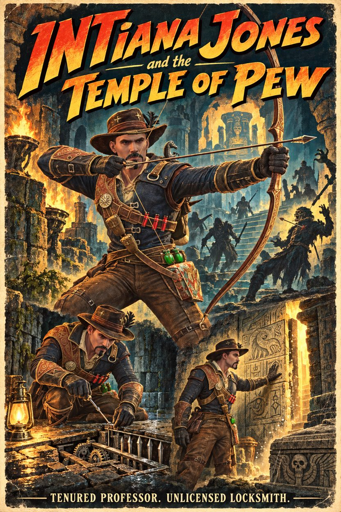
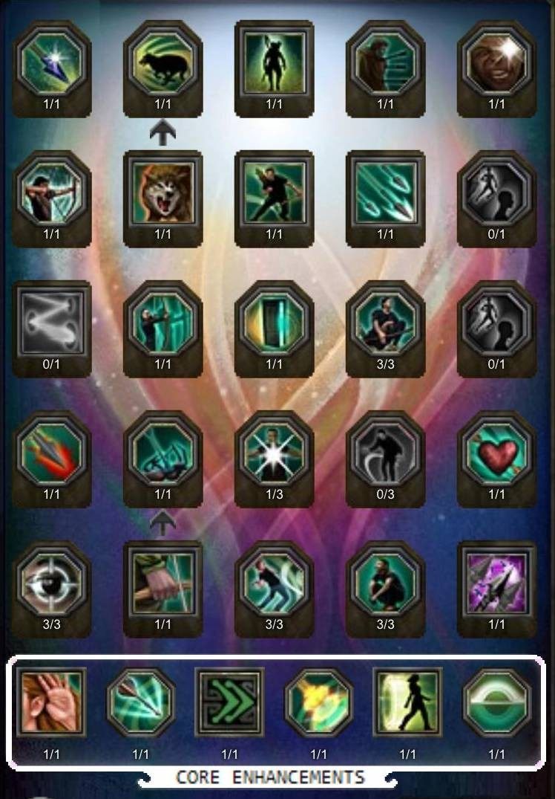
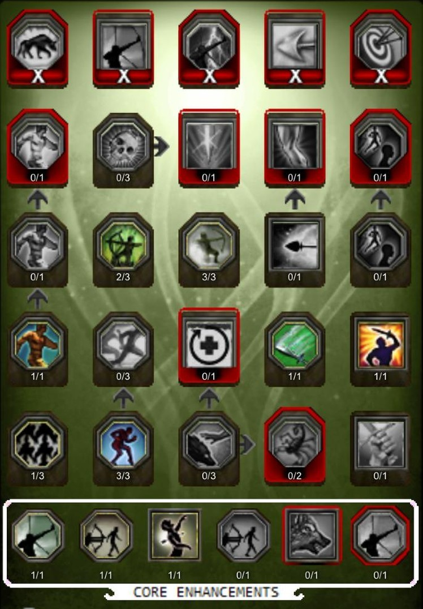
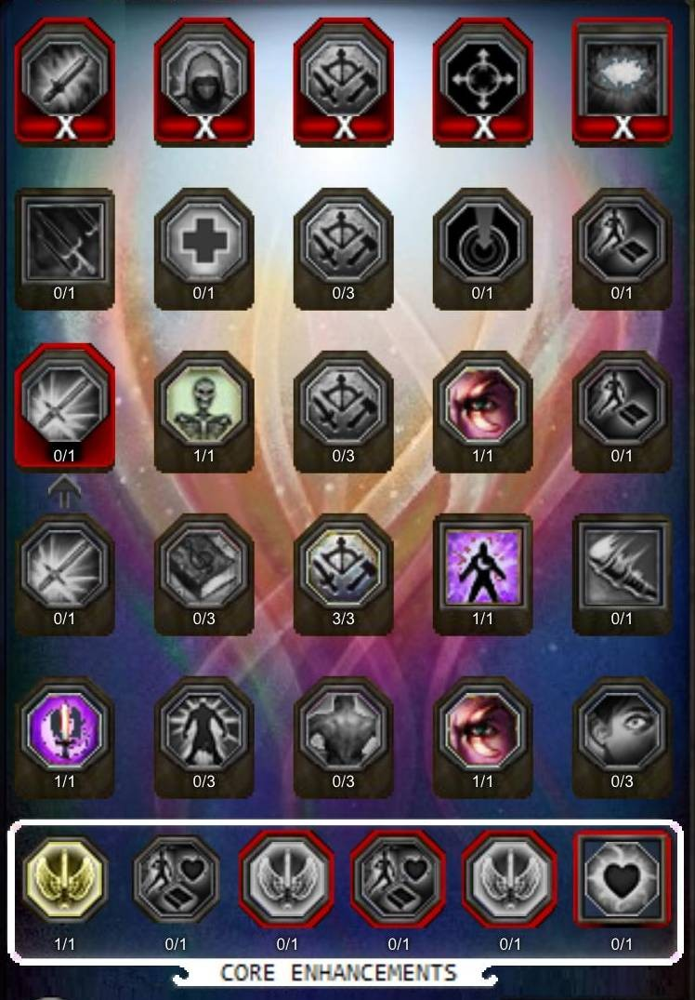
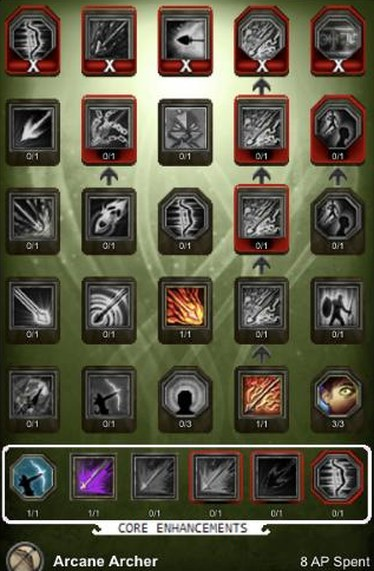
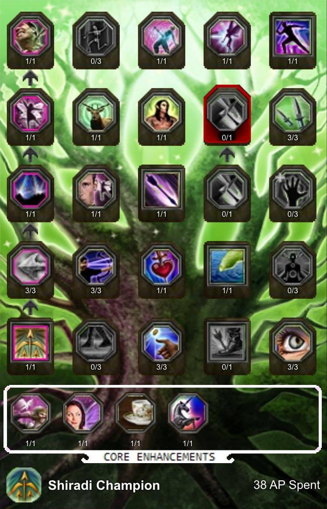
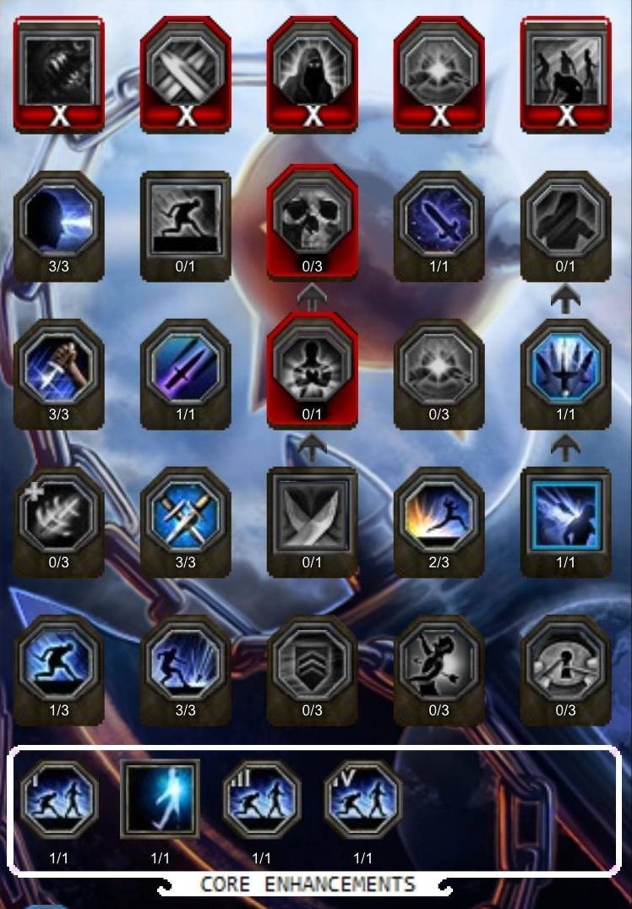
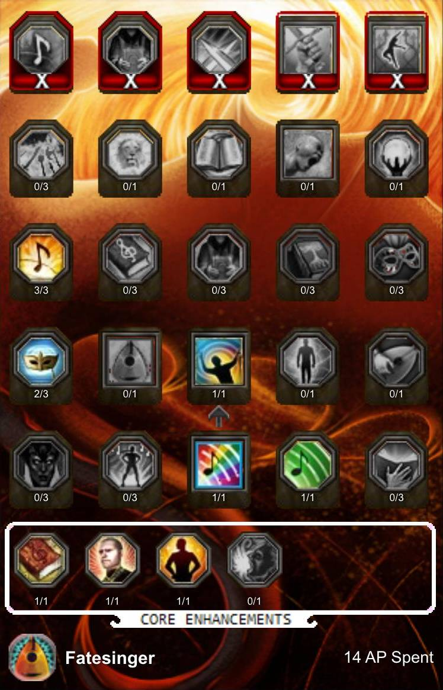

INT Longbow Guide v40

INTiana Jones and the Temple of Pew. The cover is the feeling of playing this character: it is a lot of fun.
Start here: what this guide is
This is a complete plan for one Dungeons & Dragons Online character: an Intelligence-based archer with a longbow, from level 1 to the level cap of 36 and into Reaper 10, the hardest difficulty in the game. Every number comes from the DDO wiki page named in Sources. Where a choice is a judgment call rather than a wiki fact, it is labelled build decision.
It is a platform build. DDO rewards playing a character to cap, reincarnating, and levelling again for a permanent past-life bonus. This build is the platform you do that on: the same Rogue 1 / Ranger 9 chassis every life with ten levels of whichever class you are collecting, the same enhancement and destiny layouts, and gear picked up while levelling that stays useful on the next life. One character, every grind, no re-planning.
What you will do with it. Shoot from range with Intelligence driving both your attack and your damage (Harper Agent’s Strategic Combat does that), mark a target so the whole party hits it harder, and press a small set of buttons on short timers. Playing it, at the end, lists every button with its cooldown and a rotation that works at Reaper 10.
Take the first-time Reaper bonuses on every life. Reaper difficulty gives Reaper experience (RXP) on top of normal XP. The wiki’s Reaper difficulty page records that the first run of a quest on any Reaper skull in the current life pays an extra 200% RXP, with a +45% first-time XP bonus on the quest itself. RXP buys Reaper enhancement points that persist through reincarnation (re-allocate them at level 4), and it is only awarded when at least ten enemies are defeated. Run each quest once on Reaper 1 as you level; the bonus resets with every new life, so a platform build collects it again and again.
How the guide is laid out. It is a set of building blocks, in the order you assemble them:
- The build in one page: the whole plan in one table.
- Class split, past-life priority and feats: the chassis, the order to run lives in, and what you pick as you level, with every prerequisite checked.
- Enhancements and epic destinies: the three trees of each, with a picture of every tree.
- Levelling roadmap: level by level, which feat, which points, which bow, and what switches on.
- Gear: what to wear at each milestone, a bow for every stretch of levels, the two endgame kits, and the survivability swaps.
- Audit and Reaper 10: proof that everything above stacks, and the rules the layout is tuned for.
- Playing it: a first-session checklist, the buttons, the rotation.
- Appendix: how the gear optimizer was driven, for anyone who wants to re-run it.
Glossary. Eight terms carry most of the guide:
| Term | Meaning |
|---|---|
| AP | Action points, spent in enhancement trees from level 1. 80 at level 20. |
| DP | Destiny points, spent in epic destiny trees from level 20. 76 at level 36. |
| Past life | The permanent bonus from reincarnating a capped character. |
| R10 | Reaper 10 skulls, the hardest difficulty. |
| ML | An item’s minimum level. |
| [W] | A weapon’s base-damage multiplier: 3[1d8] rolls the die three times. |
| Affix | One named line on an item, such as Doubleshot 9%. |
| Bonus type | The stacking rule. Two bonuses of the same type (Enhancement, Insight, Quality, Profane, Artifact, Competence, Morale) do not add; the larger one applies. |
Have fun playing the game. That is the point of all of it.
Written for Update 82.0.1 (October 16, 2026). All point totals are balanced against the wiki’s tier and core gates. Tree images are rendered on DDO BuildHub from the layouts in this guide (Deepwood Stalker and Arcane Archer re-rendered for the Arcane Archer layout).
The build in one page
Everything below expands one row of this table. Each row links to its section.
| Area | Decision |
|---|---|
| Stats | Base DEX 14, INT 18, +8 tomes, every level-up into INT. Harper Strategic Combat I and II put INT on the bow’s attack and damage. |
| Class split | Class lives: Rogue 1, Ranger 2-10, past-life class 11-20. Iconic lives: iconic class 1, Rogue 2, Ranger 3-10 (11 on the Scourge), iconic base class to 20. Racial lives: Rogue 1-2, Ranger 3-11, Rogue 12-20. |
| Past lives | Every trip to 30 pays two past lives: iconic trips carry a class (Aasimar Scourge is Ranger, Shadar-kai Rogue, Purple Dragon Knight Fighter, Tabaxi Monk), heroic-race trips bank an epic life at 30 and a class or racial life from 20. Each bonus is finished to three stacks before the next: 45 trips, 89 lives; Ranger x3 by trip 3, Doubleshot x3 by trip 6, Tier A complete by 18, Completionist at 25, Tier B by 37, all twelve Divine (+36 PRR) by 45. |
| Heroic feats | Point Blank Shot 1, Precision 3, Insightful Reflexes 6, Improved Critical: Ranged 9, Improved Precise Shot 12, Weapon Finesse 15, Weapon Focus: Ranged 18. |
| Epic and legendary feats | Combat Archery 21, Pierce Adamantine 22, Overwhelming Critical 24, Doubleshot 25, Patience 27, Harbinger of Chaos 28, Scion of Arborea and Watchful Eye 30, Legendary Aim 31, Trick Shot 33, Pierce Cold Iron 34 (or Titan’s Blood; see the audit), Legendary Trick Shot 36. |
| Enhancements (80 AP) | Horizon Walker 41 (capstone), Deepwood Stalker 17, Harper Agent 14, Arcane Archer 8 (Elemental Arrows imbue, Morphic Arrows). Every tier gate and the 40-AP capstone gate met. |
| Epic destinies | 76 points, which every level-36 character has: Shiradi Champion 35 (tier 5, mantle), Shadowdancer 27, Fatesinger 14. Points from tomes, Machrotechnic and epic past lives (up to 91) follow the priority list under Epic destinies. Legendary Dreadnought is the assessed alternative for the third tree and is not taken. |
| Bows | By level band (damage model): heroic Calamitous Longbow or Silver Longbow 8, Thornlord 10, Alchemical Longbow 12, Bow of Sinew 14, Epic Thornlord 20, Pinion 23, Chaosbow or Aerania 28-29, a Dinosaur Bone or Attuned Bone Longbow with Meltscale 31, then at cap a Legendary Cataclysmic Longbow crafted with a Melancholic 16d6 slot; Legendary Demon’s Arc or The Faceless Lord’s Reach (ML35) and Aeon, the Blazing Reign (ML33) are the named-item steps. |
| Gear affixes, in order | Ranged Power, Doubleshot, Physical Sheltering, Intelligence, Seeker, Armor-Piercing, Sneak Attack Dice, Deadly, Distant Diversion, False Life, Fortification, Reflex Save, Magical Sheltering, Dodge (capped at 18), Fire, Cold, Electric and Acid Absorption, Healing Amplification, Ranged Alacrity (capped at 20), Accuracy. Saved in the DDO Loadout Optimizer as the bundle INT Longbow R10 v3, with Legendary Black Earth Guardian’s Lenses blocked; the reasoning, and the edge-case tests that moved Physical Sheltering to third, are in the Appendix. |
| Kit | ML35-36 kit from the optimizer run on that ranking, every piece checked on the wiki: the same Ranged Power 44, Doubleshot 36, Intelligence 36 and Seeker 29 as the offence-first ranking, with PRR 133 instead of 40. The survivability swaps are listed beside it; the ML33-34 ledger set is kept as the first raid kit. |
| Reaper | Run every quest once on Reaper for the first-time RXP bonus each life. At Reaper 10 passive Doubleshot is 109% on the first raid kit and 128% on the ML35-36 kit, well under the 200% soft cap. Dodge is capped by the armor’s Max Dex Bonus (20 on both armors, 23 with Improved Marking, 29 with Lithe 3). |
| Playing it | Mark, Opening Shot, Scattershot and Manyshot on an 8-second cycle for packs; Mark, Corner the Quarry, Pluck and Arrow of Discord on bosses; stand still for Archer’s Focus. Full rotation under Playing it. |
Class split
This section fixes the class levels for every kind of life. The chassis is always Rogue 1 and Ranger 9; the other ten levels are whatever class the life is for.
| Character level | Class life | Iconic life | Racial life |
|---|---|---|---|
| 1 | Rogue (Rogue 1) | Iconic base class | Rogue (Rogue 1) |
| 2 | Ranger (Ranger 1) | Rogue (Rogue 1) | Rogue (Rogue 2) |
| 3-10 | Ranger (Ranger 2-9) | Ranger (Ranger 1-8) | Ranger (Ranger 1-8) |
| 11 | Past-life class | Ranger (Ranger 9) or base class | Ranger (Ranger 9) |
| 12-20 | Past-life class | Iconic base class | Rogue (Rogue 3-11) |
Why ten levels of the past-life class. Past Life Feats page: the past life goes to “the class you have the most levels of. In the case of a tie, the dominant class is the first listed on this list: Barbarian, Bard, Cleric, Fighter, Paladin, Ranger, Rogue, Sorcerer, Wizard, Monk, Favored Soul, Artificer, Druid, Warlock, Alchemist.” Ranger is sixth, so a 9/9 tie with any later class hands the life to Ranger. Ten levels of the past-life class win outright; one Rogue level can never be dominant.
Why Rogue at level 1. Rogue page: only “Arcane Tricksters, Rogues, Artificers, Dark Hunter Ranger archetype or those under the effect of the spell Find Traps” can Search for traps with DC above 20. Rogue 1 also gives a ranged sneak die (“can be used with ranged weapons within 30 ft.”), (8 + INT) x4 skill points, and Disable Device, Open Lock, Search, Spot, UMD and Tumble as class skills; Rogue is a free class. If you never trap, Fighter 1 is the alternative: a bonus feat from a list that includes Point Blank Shot, Precision, Weapon Focus, Power Critical and Improved Precise Shot, and full BAB that brings Improved Precise Shot to level 12 on every life.
Iconic lives. Iconic True Reincarnation “rewards both the Iconic PL and full Class PL benefits.” Level 1 is the iconic’s class, so Rogue moves to 2 and the base class fills 12-20. The Aasimar Scourge’s forced class is Ranger (“Scourge first level is Ranger”), so that life reaches Ranger 11 and Improved Precise Shot is free at level 12.
Racial lives. Racial Reincarnation grants “a Racial Past Life feat, based on the character’s current race”; class is irrelevant, so the split is chosen for power: Ranger 9 for Manyshot and Evasion, Rogue 11 for Evasion at level 2, 6d6 sneak attack and the Rogue 10 special ability.
Class grants used. Ranger (prerequisites waived): Bow Strength 1, Rapid Shot 2, Precise Shot 4, Manyshot 6, Evasion 9; Favored Enemy at 1 and 5; Improved Precise Shot at 11. Rogue: Sneak Attack +1d6 and Trapfinding 1, Evasion 2, +1d6 at every odd level, Improved Uncanny Dodge 8, Special Ability 10, 6d6 at 11.
Past-life prioritybuild decision
This is a platform build, so the order you run lives in is a build decision as real as the feat list. Every bonus below is quoted from the wiki page named in Sources (Past Life Feats, Racial Past Life Feats, Iconic Past Life Feats, Epic Past Life Feats, Completionist); the ranking is this guide’s, judged by one rule: what helps an Intelligence archer at Reaper 10 first, survivability second, trap and skill work third, and everything else only because Completionist needs it.
How the bonuses workwiki
Everything in this section rests on these rules, each from the page named in Sources.
| Rule | What the wiki says | What it means for this build |
|---|---|---|
| Class past lives | A free passive feat for the dominant class at reincarnation; “all passive Past Life feats can be stacked a maximum of three times each.” The named “purchased” version costs a feat slot from level 3 | Ten levels of a class make it dominant; the passive is permanent and stacks to three. Only Sneak of Shadows is worth a slot, and only where one is spare |
| Archetypes | An archetype’s past life is its own feat with its own passive and “counts as” the base class for Completionist; an archetype cannot be multiclassed with its base class | Dark Hunter and Dragon Disciple are extra stacks of sneak and to-hit lines, not substitutes for Ranger and Monk; Dark Hunter runs with no Ranger levels |
| Iconic lives | Iconic True Reincarnation gives the iconic feat “AND a Past Life Feat based on the class that the character is reincarnating out of”; every iconic’s first level is a fixed class (Iconic Heroes page); an iconic cannot take an archetype of that class; iconics start at 15 and must reach 30 to reincarnate | Two past lives per trip. The fixed class decides which class each iconic carries; on this guide’s iconic split that class is dominant |
| Racial lives | 1st, 2nd and 3rd life of a race each give a different reward; the 3rd is +1 Racial Action Point “applied to your current racial Enhancement tree”; the ability bonuses “do not count for Feat prerequisites” | Only Intelligence and Constitution races pay; the racial AP is spent in whatever race you are playing |
| Epic lives | Chosen freely at any level-30 Epic Reincarnation; each has a passive that “stacks up to 3 times” and a stance, “only 1 active stance allowed per Epic Destiny Sphere”; every feat in a sphere shares the sphere’s passive | Passive totals depend only on how many lives are in a sphere; pick the stance per sphere once |
| Epic then heroic in one trip | “An Epic Reincarnation on a non-Iconic character can be followed up with a Heroic True Reincarnation” at 20; Heroic and Racial Reincarnation are available from 20, Iconic only at 30, and an iconic that uses an Epic Heart cannot use an Iconic Heart “until you have finished the epic reincarnation process and have reacquired level cap” | A heroic-race trip to 30 banks an epic life and a class or racial life. An iconic trip banks the iconic and class lives, and adding an epic life to it costs a second climb from 20 to 30 |
| Completionist feats | Completionist (one life of every class or archetype): +2 all ability scores, +2 all skills; Racial Completionist (three lives of every race) is “identical to, and stacks with” it; Epic Completionist: +1 destiny point per twelve epic lives, up to 4 | Completionist at trip 25 is the single biggest step; Racial Completionist is 51 lives and is not in the plan; epic points feed the Past 76 destiny table |
| Costs and timers | Heroic XP requirements increase after the 4th and 7th True Reincarnation and not after that (Heroic True Reincarnation page, post-Update 72; the Racial and Iconic pages still say 1st and 2nd); epic XP never changes; three days between True Reincarnations; Reaper XP persists through every life; hearts: Heroic True Heart of Wood or Blood from Lahar or the store, Iconic and Epic Hearts for 4,200 Commendations of Valor or 42 Heart Seeds each | An iconic trip needs one Iconic Heart; a heroic trip that banks an epic life needs an Epic Heart and a Heroic Heart. Commendations of Valor are the real currency of the plan |
Class lives, ranked
What each passive does for this build, and how the life is run. Tier A are the lives whose passive feeds the bow directly; take their first stacks before anything else, then collect the rest once for Completionist, then come back for second and third stacks.
| Tier | Class life | Passive per stack (wiki) | Why it ranks here | How to run the life |
|---|---|---|---|---|
| A | Ranger | +2 damage with ranged weapons, +2 elemental resistances | The only past life that is ranged damage by name. Flat, so near zero at R10, but full value for the whole climb and on every life | Aasimar Scourge iconic life: the forced Ranger level plus Ranger 3-20 makes Ranger dominant, so the life pays the Ranger passive and the Scourge passive (+1 Fortitude save) together. Three Scourge lives are three Ranger stacks |
| A | Dark Hunter (Ranger archetype) | +1 to hit with sneak attacks, +1 sneak attack damage | Both lines land on every sneak-attack arrow this build fires. The life itself is a native longbow life: Bow Strength 1, Rapid Shot 2, Precise Shot 4, Manyshot 6, Evasion 9, Improved Precise Shot 11, Trapfinding 1 and sneak dice (Dark Hunter page) | Dark Hunter 20. An archetype cannot be multiclassed with its base class (Archetype page), so no Ranger levels; the Rogue level is not needed because Dark Hunter has Trapfinding |
| A | Rogue | +1 sneak attack damage, +2 saves vs traps | Sneak damage again, and the trap save for the trapper | Shadar-kai iconic life (Rogue 1-2, Ranger 3-10, Rogue 11-20): Rogue passive plus +1% Dodge. The racial-life split (Rogue 11 / Ranger 9) is the heroic alternative |
| A | Fighter | +1 to attack rolls (+1 tactical DCs) | To-hit on every arrow; full BAB also brings Improved Precise Shot to 12 on this life | Purple Dragon Knight iconic life: Fighter passive plus +3 PRR |
| A | Monk | +1 to damage rolls | The wiki does not limit it to melee; flat damage, same caveat as Ranger | Tabaxi Trailblazer iconic life: Monk passive plus +1 saves vs traps |
| A | Dragon Disciple (Monk archetype) | +1 Attack (and -1 SP on Maximize) | A second +1 to hit line. Counts as Monk for Completionist, so it is a stack to add after the Monk life, not instead of it | Rogue 1 / Ranger 9 / Dragon Disciple 10 |
| B | Barbarian | +10 hit points | Survivability; 30 HP at three stacks against x11.1 damage taken | Razorclaw Shifter iconic life: Barbarian passive plus +1 Will save |
| B | Paladin | +10% healing received from positive energy | Party healing is the only healing at R10, and this multiplies it | Bladeforged iconic life: Paladin passive plus +5% Fortification |
| B | Warlock | +3 Magical Resistance Rating | MRR is the gap in the kit (32-72); 9 MRR at three stacks | Dhampir Dark Bargainer iconic life: Warlock passive plus +1 saves vs enchantments |
| B | Bard | +2 saves vs enchantments and illusions | The Will-save holes Improved Evasion does not cover | Tiefling Scoundrel iconic life: Bard passive plus +1 Reflex save |
| C | Artificer | +1 to all Intelligence-based skills and Use Magic Device | Search, Disable Device and Spellcraft are Intelligence skills; UMD for scrolls. The rogue-skills line | Rogue 1 / Ranger 9 / Artificer 10 |
| D | Cleric, Druid, Favored Soul, Sorcerer, Wizard, Alchemist | Caster lines (conjuration DC, hireling stats, spell penetration, evocation DC, wand DC, transmutation DC) | Nothing for a bow; taken once each because Completionist needs all fifteen | Cleric as a Morninglord, Wizard as a Deep Gnome, Sorcerer as an Eladrin Chaosmancer (Wild Mage); Druid, Favored Soul and Alchemist have no iconic and run Rogue 1 / Ranger 9 / class 10 |
Purchased past-life feats. Only one is worth a feat slot on this build, and only where a slot is free: Sneak of Shadows (Rogue) is +1 to all skills and a 3-per-rest skulk with sneak-attack bonuses; the guide already names it for the Aasimar Scourge life’s spare level-12 slot. Student of the Sword (Fighter) is +1 Max Dex Bonus on armor, a +1 to the dodge cap, if a slot ever opens.
The journey: 45 trips, 89 past lives
What a trip is. One climb of the character to level 30 followed by reincarnation. It is the unit of effort in this plan, and it comes in two kinds:
| Trip type | Climb | Hearts used | Past lives banked |
|---|---|---|---|
| Iconic trip | Start at 15 as an iconic, climb to 30 | Iconic True Heart of Wood at 30 | Two: the iconic feat and the class the iconic carried (an Aasimar Scourge trip is one Ranger stack and one Scourge stack) |
| Heroic-race trip | Start at 1 as a heroic race, climb to 30 | Epic Heart of Wood at 30, which puts you back at 20; then a Heroic True Heart (class life) or a Heroic True Heart of Blood (racial life) at 20 | Two: one epic life and one class life, or one epic life and one racial life |
A trip never pays two stacks of the same feat. The full bonus of anything is three separate lives, each on its own trip: three Ranger stacks are three Scourge trips; twelve Divine epic lives are twelve heroic-race trips that each used an Epic Heart. That is why 45 trips bank 89 past lives, and why the “stacks” in the table count up one at a time.
Worked example, trip 4. After three Scourge trips, reincarnate into a heroic race and run Dark Hunter 1 to 30. At 30, use an Epic Heart and choose Primal: Doubleshot (epic life 1 of 3). Re-level to 20 in the place between, use a Heroic True Heart, and because Dark Hunter is the dominant class the life pays Dark Hunter (stack 1 of 3). Trips 5 and 6 repeat it; then trip 7 starts at 15 as a Shadar-kai.
Why the plan looks like this. Two rules. First, every trip to 30 pays two past lives, so nothing is run for one: the class lives that must be heroic (Dark Hunter x3, Dragon Disciple x3, Artificer, Druid, Favored Soul, Alchemist) and the racial lives worth having (Drow x3, Gnome x3, Dwarf x2) are eighteen heroic-race trips, exactly the eighteen epic lives the build wants, so the epic lives ride the heroic trips and no iconic trip ever needs the extra 20-to-30 climb. Second, each bonus is finished to three stacks before the next one starts, in order of value to the bow, so the character is never carrying a half-built line. The one block that is not a triple is Completionist: seven one-off lives that pay a single feat (+2 all abilities, +2 all skills), placed after the Tier A triples because +1 to hit and +1.5 damage per arrow outranks the Tier B survivability lines, and before them because it is one bonus, not seven.
| Trips | Block | Type | Run | Past lives banked | Bonus completed |
|---|---|---|---|---|---|
| 1-3 | 1 | Iconic x3 | Aasimar Scourge, 15-30, three times | Ranger 3 of 3, Scourge 3 of 3 | +6 ranged damage, +6 elemental resistances; +3 Fortitude |
| 4-6 | 2 | Heroic race x3 | Dark Hunter 1-30, three times; Epic Heart at 30, Heroic Heart at 20 | Primal: Doubleshot 3 of 3; Dark Hunter 3 of 3 | +9% Doubleshot; +3 to hit and +3 damage with sneak attacks |
| 7-9 | 3 | Iconic x3 | Shadar-kai, three times | Rogue 3 of 3, Shadar-kai 3 of 3 | +3 sneak attack damage, +6 saves vs traps; +3% Dodge |
| 10-12 | 4 | Iconic x3 | Purple Dragon Knight, three times | Fighter 3 of 3, PDK 3 of 3 | +3 to hit; +9 PRR |
| 13-15 | 5 | Iconic x3 | Tabaxi Trailblazer, three times | Monk 3 of 3, Tabaxi 3 of 3 | +3 damage; +3 saves vs traps |
| 16-18 | 6 | Heroic race x3 | Dragon Disciple 1-30, three times, with an Epic Heart | Arcane: Enchant Weapon 3 of 3; Dragon Disciple 3 of 3 | +3 bow enhancement (stance), 3% elemental absorption; +3 to hit. Tier A complete |
| 19-25 | 7 | Heroic race x4, Iconic x3 | Artificer, Druid, Favored Soul, Alchemist, each 1-30 with an Epic Heart; then Morninglord, Deep Gnome, Eladrin Chaosmancer, 15-30 | Divine: Brace 3 of 3, Ancient Blessings 1 of 3; Artificer, Druid, Favored Soul, Alchemist, Cleric, Wizard, Sorcerer (Wild Mage) 1 of 1; Morninglord, Deep Gnome, Chaosmancer 1 of 3 | Completionist: +2 all abilities, +2 all skills; +3 all saves (stance), +12 PRR; +1 Intelligence skills and UMD; +3 MRR |
| 26-28 | 8 | Iconic x3 | Razorclaw Shifter, three times | Barbarian 3 of 3, Razorclaw 3 of 3 | +30 HP; +3 Will |
| 29-31 | 9 | Iconic x3 | Bladeforged, three times | Paladin 3 of 3, Bladeforged 3 of 3 | +30% healing received; +15% Fortification |
| 32-34 | 10 | Iconic x3 | Dhampir Dark Bargainer, three times | Warlock 3 of 3, Dhampir 3 of 3 | +9 MRR; +3 saves vs enchantments |
| 35-37 | 11 | Iconic x3 | Tiefling Scoundrel, three times | Bard 3 of 3, Tiefling 3 of 3 | +6 saves vs enchantments and illusions; +3 Reflex. Tier B complete |
| 38-40 | 12 | Heroic race x3 | Drow 1-30, three times; Epic Heart, then Racial Heart | Divine: Ancient Blessings 3 of 3, Block Energy 1 of 3; Drow 1st, 2nd, 3rd life | +1 Search, +1 Intelligence, +1 Racial Action Point; +21 PRR from Divine so far |
| 41-43 | 13 | Heroic race x3 | Gnome 1-30, three times; Epic Heart, then Racial Heart | Divine: Block Energy 3 of 3, Power Over Life and Death 1 of 3; Gnome 1st, 2nd, 3rd life | +1 UMD, +1 Intelligence, +1 Racial Action Point; +30 PRR |
| 44-45 | 14 | Heroic race x2 | Dwarf 1-30, twice; Epic Heart, then Racial Heart | Divine: Power Over Life and Death 3 of 3; Dwarf 1st, 2nd life | +1 Balance, +1 Constitution; Divine complete: +36 PRR; twelve epic lives, Epic Completionist: +1 destiny point |
Totals after trip 45: 27 iconic trips and 18 heroic-race trips; 36 class lives, 27 iconic lives, 8 racial lives, 18 epic lives. The cut lines, if 45 is more than one character will run: trip 18 (every Tier A line at three stacks, Doubleshot and Enchant Weapon complete), trip 25 (Completionist), trip 37 (Tier B complete). Blocks 12-14 are the Divine PRR and the Intelligence races, and the Dwarf block is the first to drop.
Racial and iconic lives
Racial lives run on the Rogue 11 / Ranger 9 split, so every one of them is a good archer life; the question is only which race first. Iconic lives are already placed in the journey above by the class they carry; this table is the iconic feats on their own merits, which decides the order among the ones that carry a Tier A or B class and which Tier D iconics are worth a second or third life.
| Order | Race (racial life) | 1st / 2nd / 3rd life (wiki) | Why |
|---|---|---|---|
| 1 | Drow | +1 Search / +1 Intelligence / +1 Racial AP | Intelligence is the build’s stat; Search is the trap skill |
| 2 | Gnome | +1 Use Magic Device / +1 Intelligence / +1 Racial AP | The other Intelligence race; UMD for scrolls |
| 3 | Dwarf, Duergar, Warforged | +1 Balance or Repair / +1 Constitution / +1 Racial AP | HP |
| 4 | Elf or Wood Elf, Eladrin, Halfling, Shifter, Tabaxi | +1 Spot, Listen, Move Silently or Tumble / +1 Dexterity / +1 Racial AP | Listen sets Corner the Quarry’s DC; the Dexterity does not count for feat prerequisites (Racial Past Life Feats page), so it is worth little here |
| 5 | Human, Aasimar, Half-Elf, Half-Orc, Dragonborn, Tiefling, Dhampir | +1 skill / +1 Wisdom, Charisma or Strength / +1 Racial AP | Only for Racial Completionist (+2 all abilities, +2 all skills) and the racial AP |
The three lives of a race are worth finishing together: the 3rd life’s Racial Action Point is spent only in your current race’s tree (Enhancements page), so a Human platform spends them in Human.
| Order | Iconic life | Passive per stack (wiki) | Stance (wiki) | Why |
|---|---|---|---|---|
| 1 | Shadar-kai | +1% Dodge, up to 3% | Below 50% HP and hit: 25% incorporeality for 6/12/18 s, once per 2 minutes | Carries Rogue. Dodge is the avoidance Reaper 10 does not bypass; the only iconic passive that is a multiplier |
| 2 | Purple Dragon Knight | +3 PRR, up to 9 | Action boost: group movement speed and +1/+2/+3 saves for 20 s | Carries Fighter. PRR on top of the kit’s 133 |
| 3 | Deep Gnome | +3 MRR, up to 9 | Illusion DC and Acid spell power | Carries Wizard, a Tier D class, so the second and third lives are for the MRR alone; the best of the Tier D iconics to repeat |
| 4 | Tiefling Scoundrel | +1 Reflex save, up to 3 | Movement speed (does not stack with Speed items or Haste) | Carries Bard. Reflex feeds Improved Evasion |
| 5 | Aasimar Scourge | +1 Fortitude save, up to 3 | +2% Doublestrike per stack (melee) | Carries Ranger, the first life in the sequence, and the cheapest to run: the forced Ranger level means Improved Precise Shot is free at 12 (Class split). Fortitude is the save the kit does least for |
| 6 | Bladeforged, Tabaxi Trailblazer, Razorclaw Shifter, Dhampir Dark Bargainer, Eladrin Chaosmancer, Sun Elf | Fortification 5%, trap saves, Will save, enchantment saves, spell power | Repair, Trip DCs, melee attack, Necromancy DC, Fey Step, Light spell power | Carry Paladin, Monk, Barbarian, Warlock, Sorcerer and Cleric. Fortification is already 100% from one augment and the rest is melee or caster, so each is run for the class life it carries, three times where that class is Tier A or B |
Epic lives
Every feat in a sphere shares that sphere’s passive, so the passive total depends only on how many lives you run in the sphere; the stance is the choice. One stance per sphere is active at a time.
| Order | Sphere and feat | Stance per stack (wiki) | Sphere passive per stack (wiki) | Why |
|---|---|---|---|---|
| 1 | Primal: Doubleshot (3 lives) | +3% Doubleshot, 9% at three | +3 max HP, +4 per ten character levels | Whole extra arrows, full value under the 200% soft cap; the one epic line that is a multiplier |
| 2 | Divine: Brace (3 lives), then the other three Divine feats | +1 to all saves per stack | +3 PRR per stack: 36 PRR at all twelve | The passive is the prize; twelve Divine lives are the largest survivability line any past life offers. Ancient Blessings (+5 healing amplification per stack) is the alternative stance when a healer is in the party |
| 3 | Arcane: Enchant Weapon (3 lives), then the other four | +1 enhancement bonus to the main-hand weapon per stack | +1% absorption of acid, cold, electric and fire; 15% at all fifteen | +3 to hit and damage on the bow from the stance; the absorption passive is the elemental line the gear could not carry |
| 4 | Martial: Skill Mastery (3 lives), then Fortification, then the rest | +1 to all skills per stack; or +10% Fortification per stack | +1% AC, +1 MRR and +1 MRR cap per stack | Skills for the trapper; Doublestrike is melee-only and Trap Damage Absorption is small |
| 5 | Primal: Colors of the Queen, Ancient Power, Fast Healing | Random effects; +2 attack per stack (the damage half is two-handed only); passive healing | as above | Fill the Primal sphere to twelve for the HP passive and the Epic Completionist count; Ancient Power’s +2 attack per stack is the best of the three stances after Doubleshot |
Twelve epic lives in any mix is one Epic Completionist point; the Past 76 table under Epic destinies is where those points go. At three stacks of Doubleshot, twelve Divine and three Enchant Weapon (eighteen epic lives) the build carries +9% Doubleshot, +36 PRR, +3 weapon enhancement, +3 saves, 3% absorption and about 90 HP at cap, all before gear.
What the journey pays, line by line
The totals after trip 45, every line from the wiki pages above, grouped the way the build is judged. Nothing here depends on gear, so it is carried into every life from level 1 (racial bonuses) or level 3 (Completionist).
| For | Lines | Total |
|---|---|---|
| Hitting | Fighter +3, Dragon Disciple +3, Dark Hunter +3 with sneak attacks; Completionist +2 Intelligence and Drow +1, Gnome +1 (+4 Intelligence, +2 modifier through Strategic Combat); Arcane Enchant Weapon stance +3 bow enhancement | +11 to hit, +14 on sneak attacks |
| Damage per arrow | Ranger +6 ranged, Monk +3, Enchant Weapon +3, +2 Intelligence modifier at x1.5 (+3); Dark Hunter +3 and Rogue +3 on sneak attacks | +15 per hit, +21 on sneak attacks (flat; full value while levelling, 10% at Reaper 10) |
| Arrows | Primal Doubleshot stance | +9% Doubleshot |
| Not being hit | Shadar-kai +3% Dodge; Purple Dragon Knight +9 PRR and Divine passive +36 PRR; Warlock +9 MRR, Deep Gnome +3; Bladeforged +15% Fortification; Primal passive 45 HP at 30, Barbarian +30 HP, Dwarf +1 Constitution | +3% Dodge, +45 PRR, +12 MRR, +75 HP |
| Saves | Divine Brace stance +3 all; Scourge +3 Fortitude, Tiefling +3 Reflex, Razorclaw +3 Will; Rogue +6 and Tabaxi +3 vs traps; Bard +6 and Dhampir +3 vs enchantments; Ranger +6 elemental resistances | +6 Fortitude, +6 Reflex, +6 Will; +9 more vs traps; +9 more vs enchantments |
| Trap and skill work | Completionist +2 all skills; Artificer +1 Intelligence skills and UMD; Drow +1 Search; Gnome +1 UMD; Dwarf +1 Balance; the +4 Intelligence | Search +6, Disable Device +5, UMD +5 |
| Healing received | Paladin +30%; Divine Ancient Blessings stance (+5 per stack) if swapped in | +30% from positive energy |
| Points | Epic Completionist (12 of the 18 epic lives); Drow and Gnome third lives | +1 destiny point (into the Past 76 table); +2 Racial Action Points in the race being played |
DEX and BAB check
Base stats are DEX 14 and INT 18, with +8 tomes and every level-up into INT. The one thing a low-DEX archer has to prove is that every feat prerequisite is still met; this table does that.
Ability tome tiers (Ability tome page): +2 at level 1, +3 at 3, +4 at 7, +5 at 11, +6 at 15, +7 at 19, +8 at 22. Base DEX 14, no level-ups into DEX. Rogue BAB +0/+1/+2/+3 at Rogue 1-4.
| Level | DEX | Feat | Wiki prerequisite | Met |
|---|---|---|---|---|
| 3 | 17 | Precision | BAB +1, DEX 13 | Yes |
| 6 | 17 | Insightful Reflexes | INT 13 | Yes |
| 7 (8 racial) | 18 | Manyshot (Ranger 6) | granted, prerequisites waived | Yes |
| 9 | 18 | Improved Critical: Ranged | BAB +8 | Yes: Rogue 1 (0) + Ranger 8; Rogue 2 (1) + Ranger 7 on racial lives |
| 12 | 19 | Improved Precise Shot | DEX 19, Point Blank Shot, Precise Shot, BAB +11 | Yes with a full-BAB past-life class or on racial lives (Rogue 3 = +2, Ranger 9). A 3/4-BAB past-life class reaches BAB 11 at 15: swap the 12 and 15 picks. |
| 15 | 20 | Weapon Finesse | BAB +1, DEX 13 | Yes |
| 18 | 20 | Weapon Focus: Ranged | BAB +1 | Yes |
| 21 | 21 | Combat Archery | Level 21, Point Blank Shot, DEX 17 | Yes |
Heroic feats
Seven picks. The only real decision is at level 12: Improved Precise Shot needs BAB 11, which a full-BAB past-life class reaches at 12 and a 3/4-BAB class at 15, so the two columns swap one pair.
| Level | Full-BAB past-life class, iconic and racial lives | 3/4-BAB past-life class | What it does (wiki) |
|---|---|---|---|
| 1 | Point Blank Shot | Point Blank Shot | Prerequisite for Improved Precise Shot and Combat Archery; +1 critical threat range with longbows and shortbows (Threat range page) |
| 3 | Precision | Precision | +5% to hit, -25% target fortification |
| 6 | Insightful Reflexes | Insightful Reflexes | INT modifier to Reflex saves; this is what makes Evasion work on a 14-DEX character |
| 7 | Manyshot (Ranger 6; level 8 on racial and iconic lives) | same | Three arrows with +2 threat range and multiplier, 8-second cooldown; passive Doubleshot equal to 1.5x BAB with bows |
| 9 | Improved Critical: Ranged | Improved Critical: Ranged | Doubles the base threat range; does not stack with Keen; prerequisite for Overwhelming Critical |
| 12 | Improved Precise Shot | Weapon Finesse | Passive: “+50% ability-modifier damage with Longbows and Shortbows (stacks with Precise Shot).” Stance: shots pass through every enemy in the line at -20% damage |
| 15 | Weapon Finesse | Improved Precise Shot | “+2 bonus on attack rolls and +10% fortification bypass” (since Update 76; the old Dexterity-to-hit effect is gone). Prerequisites BAB +1 and Dexterity 13, both met |
| 18 | Weapon Focus: Ranged | Weapon Focus: Ranged | +1 attack and a stacking +2 Ranged Power (the Ranged Power counts without the weapon type equipped) |
Seven slots, or eight on an Aasimar Scourge life. A heroic life has seven feat slots (levels 1, 3, 6, 9, 12, 15 and 18), and the table above fills all seven. An Aasimar Scourge life has an eighth, because the Scourge’s forced Ranger level puts Ranger 11 at character level 12 and the class grants Improved Precise Shot there (Class split), so the level-12 slot is free. On those lives, take Power Critical in it: the feat that Weapon Finesse pushed off the seven-slot list (+2 to confirm criticals, +2 critical damage before multipliers), with its Weapon Focus prerequisite met at 18. The order on a Scourge life is Point Blank Shot 1, Precision 3, Insightful Reflexes 6, Improved Critical 9, Weapon Finesse 12, Weapon Focus: Ranged 15, Power Critical 18. Earlier versions put Empower Healing Spell in that slot; it does nothing for this build (see below). Sneak of Shadows is the other candidate if you hold a Rogue past life and want the skulk.
Feats not taken, and why (build decision, wiki facts).
- Quicken Spell. It makes spells cast faster and “cannot be interrupted by a concentration check,” and needs a character “able to cast spells.” This build has nothing to quicken: a Ranger “needs a Wisdom score of at least (10 + spell level) to prepare and cast spells,” and with Wisdom 8 the Ranger spell list is closed until tomes open it; the buttons that matter are spell-like abilities, and “casting SLAs cannot be interrupted by taking damage (they don’t require Concentration checks)” (Spell-like ability page), so Haste and Dimension Door gain nothing from it.
- Empower Healing Spell. Earlier versions named it for the spare Scourge slot; it is +75 spell power to healing spells, which on this build means Cure Light Wounds at 4% effectiveness in Reaper. Removed.
- Shot on the Run. “Negates the -4 penalty to attack rolls associated with moving while firing” and +6 Ranged Power, but its prerequisites are Mobility (which needs Dodge) and Point Blank Shot: three feats for +6 Ranged Power, 1% dodge and the moving penalty. The build is built to stand still (Archer’s Focus loses a stack per 3 seconds of movement, Hunter’s Focus rebuilds it after 6 seconds stationary), so the penalty it removes is one the rotation already avoids. Weapon Finesse pays more per feat.
- Power Critical was the level-18 pick through v37. Against Weapon Finesse it is +2 to confirm and +2 critical damage before the x6-x8 multiplier on the 25% of rolls that threaten, roughly +4 per hit on average at cap; Weapon Finesse is +2 to hit on every arrow and 10% fortification bypass, which is what keeps the critical profile and the sneak dice working against fortified Reaper enemies. It is the eighth-slot pick on Aasimar Scourge lives, where the slot is free and the prerequisite is already in the list.
Epic and legendary feats
Eleven picks from 21 to 36. Two are conditional on the bow you carry (Pierce Adamantine and the level-34 slot); the audit explains why.
Epic levels page: feats at 21, 24, 27, 30, 33 and 36 may be epic or heroic; the 22, 25, 28, 31 and 34 slots take Epic Destiny feats only; the legendary feat is at 30; ability points at 32 and 36 go to INT.
| Level | Feat | Prerequisite | What it does (wiki) |
|---|---|---|---|
| 21 | Combat Archery | Level 21, Point Blank Shot, DEX 17 | +1[W], 2% dodge, +1 threat range and multiplier with longbows and shortbows (U81.4) |
| 22 | Pierce Adamantine | Level 22 | Unbroken DR costs 25% of weapon damage for Bludgeoning/Piercing/Slashing/Bane and 50% for other types since U81.4. Redundant with a bow that is already Adamantine (Thunder-Forged, or a Lamordia bow with Melancholic Flames): see the audit |
| 24 | Overwhelming Critical | Improved Critical | +1 multiplier on 19-20; “All effects that increase critical damage multiplier on rolls of 19-20 stack” |
| 25 | Doubleshot | Level 25 | +10% Doubleshot |
| 27 | Patience | Level 21 | +1 multiplier, -10% attack speed |
| 28 | Harbinger of Chaos | Level 28 | +2% Doubleshot; +2 Imbue dice while Chaotic, which Arcane Archer’s Elemental Arrows imbue uses |
| 30 | Scion of Arborea (legendary), Watchful Eye (epic) | Level 30; Level 27 | +20 Melee and Ranged Power, +2 weapon enhancement; Watchful Eye plus Shiradi’s Pierce Deception is +5% Doubleshot |
| 31 | Legendary Aim | Level 31 | +10 attack, +5% dodge bypass with ranged weapons |
| 33 | Trick Shot | Level 21 | +40 Ranged Power for 4 seconds on Tumble |
| 34 | Pierce Cold Iron, or Titan’s Blood | Level 22 | Titan’s Blood (+10% Legendary bonus to max HP) is the pick whenever the bow already counts as Cold Iron (Thunder-Forged, or Melancholic Chill on a Lamordia bow); see the audit |
| 36 | Legendary Trick Shot | Level 30, Trick Shot | Listed as a Legendary feat on the wiki; confirm the slot accepts it |
Enhancements: 80 AP
Four trees: Horizon Walker for the capstone and the bow lines, Deepwood Stalker for sneak dice and Sniper Shot, Harper Agent for Intelligence to hit and damage, and Arcane Archer for the imbue that wakes the build’s idle Imbue dice and for Morphic Arrows, which ends the damage-reduction penalty against bludgeoning and slashing DR. Every tier gate and the 40-AP capstone gate is met; the level-by-level purchase order is in the Levelling roadmap.
Rules (Enhancements page). 80 AP at level 20. Tier 2 needs 5 AP already in the tree, tier 3 needs 10, tier 4 needs 20, tier 5 needs 30, and the sixth core (capstone) needs 40. Tier 5 in one tree only; one capstone. Racial AP from Racial Reincarnation (1 per race at three racial lives, up to 16, plus 3 from Racial Enhancement Point Tomes) “can only be spent on racial enhancements.” Tomes of Universal Enhancement (up to +4) add AP usable in universal trees only (Horizon Walker, Harper Agent, Vistani, Inquisitive).
| Tree | AP | Gate check |
|---|---|---|
| Horizon Walker | 41 | 34 under tier 5 (needs 30); 40 under the capstone (needs 40) |
| Deepwood Stalker | 17 | 11 under tier 3 (needs 10) |
| Harper Agent | 14 | 5 under tier 2, 10 under tier 3 |
| Arcane Archer | 8 | 6 under Morphic Arrows (core 2 needs 5 spent and Ranger 3); 6 under tier 2 (needs 5) |
| Total | 80 | Four trees of six allowed; tier 5 in Horizon Walker only; capstone Horizon |
Each tree below is followed by its image as laid out on DDO BuildHub (the build is saved there, unlisted, and linked in Sources). Lit icons with a rank count are taken; red-bordered icons are locked by level or class count.
Horizon Walker, 41 AP
The main tree. Mark Target, Haste, the two bow trainings, Feywild Attunement and the Horizon capstone are why the build is here.
| Tier | Picks (ranks) | AP | What it does (wiki) |
|---|---|---|---|
| Cores | Mark Target, Improved Marking, Haste (Greater Marking), Dauntless Marking, Dimension Door, Horizon | 6 | Mark debuffs to -10 AC, -25% fortification, -4 saves, -20% speed; Haste SLA; +3 Max Dex Bonus in light armor; +3 Maximum Dodge; Dimension Door SLA; Horizon: +2 all abilities, +10 Ranged Power, Marked Targets are Favored Enemies, and a Marked Target that is also a Favored Enemy type “gets Favored Enemy bonuses twice” |
| 1 | Eye for Accuracy 3, Opening Shot, Skills 3, Conjure Arrow, Planar Dodge 3 | 12 | +3 attack; Opening Shot +30% damage and 3d6 Force; +3 Tumble/Spot/Listen (Listen sets Corner the Quarry’s DC); returning +1 arrows; +3% Dodge |
| 2 | Walker Training I, Take the Opening, Protection from Evil and Good 1, Favored Enemy: Evil Outsiders | 5 | +1/+1 with bows; Opening Shot +1d10 Force per 2 levels on full-HP targets, doubled on Marked; +2 AC and saves vs evil; a Favored Enemy feat |
| 3 | Two Places At Once, Hunter’s Focus, Tenacious Hunter 3 | 6 | Displacement for 12 seconds on Manyshot or Scattershot; 1d4+4 Archer’s Focus stacks after 6 seconds stationary; +6 damage vs Marked and extraplanar |
| 4 | Walker Training II, Corner the Quarry, Scattershot, Walker’s Guidance | 6 | +1/+1 with bows; +40% damage and immobilise on Marked; AoE shot with +2 threat range and multiplier; Evasion and Improved Evasion for 12 seconds on a 60-second cooldown (covers lives before Ranger 9) |
| 5 | Feywild Attunement, Banish the Quarry, Misty Step, Powershot, Improved Archer’s Focus | 6 | “+1 Competence Bonus to Threat Range and Multiplier with Longbows and Shortbows” and BAB equal to character level with bows; 1d6 Force per level on Corner the Quarry; Ranged Power equal to level for 12 seconds on tumble; 1d10 Force per level on Manyshot/Scattershot criticals at 200% Ranged Power; 25 Archer’s Focus stacks and +10% Doubleshot |
Not taken: No Step Missed (a DEX trance; the wiki antirequisite blocks it alongside Know the Angles) and the two +1 DEX picks (DEX feeds nothing on this build). Their 6 AP are Two Places At Once, Planar Dodge 3 and Walker’s Guidance. Total 6 + 12 + 5 + 6 + 6 + 6 = 41.

Deepwood Stalker, 17 AP
Sneak dice, Sniper Shot, Improved Weapon Finesse and the Ranged Power boost. The tree stops at tier 3; the 8 AP that reached tier 4 in earlier versions (Favored Defense, Survivalist II, Killer) now buy Arcane Archer, for the reasons given under that tree.
| Tier | Picks (ranks) | AP | What it does (wiki) |
|---|---|---|---|
| Cores | Far Shot, Sneak Attack, Called Shot: Sniper Shot | 3 | +1 sneak die each from Far Shot and Sneak Attack; Sniper Shot: +20% damage, +4 to hit, +2 threat range and multiplier, target vulnerable to sneak attack for 4 seconds. Cores 4-6 need Ranger 12/18/20 |
| 1 | Stealthy 3 | 3 | +1/+2/+3 Hide and Move Silently; rank 3 adds a sneak die |
| 2 | Improved Weapon Finesse, Action Boost: Ranged Power, Survivalist | 5 | “+3 To Hit and +15% Fortification Bypass”; +30 Ranged Power for 20 seconds; +10 HP and +3 PRR in light armor |
| 3 | Thrill of the Hunt 3, Favored Hunter 3 | 6 | +3 damage for 6 seconds after damaging a target below 50%; +3 to hit and damage vs Favored Enemies |
Total 3 + 3 + 5 + 6 = 17. Not taken: Favored Defense (+6 AC and +3 saves vs Favored Enemies), Survivalist II (+20 HP, +4 PRR) and Killer (up to +20% Morale Doubleshot for 15 seconds after kills); the +1 DEX pick. Tier 5 (Heavy Draw, Strikes Like Lightning) is not reachable: tier 5 is allowed in one tree and Horizon Walker’s capstone needs 41.

Harper Agent, 14 AP
Fourteen points that make the whole build work: Strategic Combat I and II put Intelligence on the bow’s attack and damage.
| Tier | Pick (ranks) | AP | What it does (wiki) | Spent |
|---|---|---|---|---|
| Core | Agent of Good I | 1 | +1 to hit and damage, +1 to hit vs Evil | 1 |
| 1 | Strategic Combat I | 2 | “You can use your Intelligence modifier to hit with Melee and Missile weapons” | 3 |
| 1 | Harper Enchantment | 2 | +1 to the weapon’s enhancement bonus; chosen as the tier-2 filler because it is +1 to hit and damage on every arrow | 5 |
| 2 | Know the Angles | 2 | Battle Trance: insight bonus to damage equal to half INT modifier for 120 seconds | 7 |
| 2 | Versatile Adept I 3 | 3 | +3 Melee and Ranged Power | 10 |
| 3 | Strategic Combat II | 2 | “You can use your Intelligence modifier for damage with Melee and Missile weapons” | 12 |
| 3 | Know Your Foe | 2 | A Favored Enemy feat: Aberration, Construct, Dragon, Evil Outsider, Giant, Monstrous Humanoid or Undead (the image shows Undead) | 14 |
Favored Enemy feats: Ranger 1 and 5, Horizon Walker Evil Outsiders, Know Your Foe, Shiradi Enemy of My Own = 5, each “+2 Damage” against a Favored Enemy and against every Marked Target. Choose a Know Your Foe type other than Evil Outsider unless you want the doubled bonus against them.

Arcane Archer, 8 AP
Eight points for two things no other tree in the build offers: an imbue, and arrows that count as bludgeoning and slashing. Every line is from the Arcane Archer enhancements page.
| Tier | Picks (ranks) | AP | What it does (wiki) |
|---|---|---|---|
| Cores | Arcane Archer, Morphic Arrows | 2 | Core 1: “Equipped bows gain a +1 Enhancement bonus for each Arcane Archer core ability you possess. All bows are treated as Implements in your hands, granting Spell Power” (+3 Implement spell power per point of the bow’s enhancement bonus, so a +15 bow is +45). Core 2 (Ranger 3, 5 AP spent): Morphic Arrows, a secondary imbue toggle: “Your arrows deal bludgeoning, piercing, and slashing damage.” Cores 3-6 (Metalline, Aligned, Shadow Arrows, Mystical Archer) need 10, 20, 30 and 40 AP spent |
| 1 | Elemental Arrows (Flaming), Awareness 3 | 5 | Elemental Arrows: imbue toggle, 1d6 fire on hit scaling 100% with Fire Spell Power, passive +5 Universal Spell Power; the element is a choice (acid, cold, electric or fire) and Flaming pairs with the crafted bow’s Melancholic and Dolorous Flames. Awareness: +3 Listen, Search, Spot and to-hit |
| 2 | Elemental Inferno | 1 | AoE ranged attack, +10% damage; every enemy around the impact takes a stack of Elemental Inferno (1d6 per 2 seconds for 6 seconds in the imbue’s element, scaling with spell power, 20 stacks). 6 SP, 3-second cooldown |
Why it is in the build. Three reasons, in order. First, the imbue: the build already takes Harbinger of Chaos (+2 Imbue dice) and Scion of Arborea (+1), and until this tree had nothing to spend them on. The Imbue Dice page: a character with 3 bonus dice deals 4d6 with the imbue, and “imbue damage attached to a physical attack is multiplied by Doublestrike and Doubleshot.” With the implement bonus and Scion’s +20 Universal Spell Power behind it, that is about 24 damage on every arrow, on every target, before Reaper scaling. Second, Morphic Arrows: since Update 81.4 unbroken damage reduction costs 25% of weapon damage, an arrow is piercing only, and every DR/bludgeoning or DR/slashing enemy (skeletons above all) took that cut from every bow in the ladder. Third, Awareness: +3 to hit on every arrow, plus Search for the trapper and Listen for Corner the Quarry’s DC. The toggles cost 20 spell points once each to switch on; Ranger levels supply spell points with no Wisdom requirement, so nothing else is needed. Metalline Arrows (core 3: bypass all metallic DR, which would retire both Pierce feats) needs 10 AP spent in the tree and is the next step if a fourth point past Awareness is ever found.
What it cost. Killer (up to +20% Morale Doubleshot for 15 seconds after kills: strong in packs, nothing on bosses), Favored Defense and Survivalist II. The imbue and Morphic Arrows are unconditional; Killer was not. Horizon Walker cannot lose a point (41 is the capstone gate plus the capstone) and Harper cannot drop below 10 without losing Strategic Combat II, which is why the points came from Deepwood.

Alternative: Haste Boost instead of Killerbuild decision
A Vistani splash buys Haste Boost at the cost of most of Arcane Archer. It is assessed and not taken.
Horizon Walker 41, Deepwood Stalker 17, Harper 12 (no Know Your Foe), Arcane Archer 3 (core, Elemental Arrows), Vistani Knife Fighter 7 (Knife Expertise, Undead Hunter, Acrobatic 1, Mist Stalker I, Haste Boost). Every gate met; 80 AP.
- Pro: Haste Boost is +30% attack speed for 20 seconds on a 30-second cooldown and works on bosses; it is an Action Boost bonus, so it stacks with the Haste SLA (Haste page: Haste “will stack with bonuses of other types (Rogue or Fighter haste boost)”); Undead Hunter keeps the Favored Enemy count at 5; Mist Stalker I is +25% negative absorption and +3 PRR/MRR.
- Con: loses Morphic Arrows (the DR fix), Awareness 3 (+3 to hit), Elemental Inferno and the choice of Favored Enemy type; keeps the imbue.
- Verdict: the recommended layout. Haste Boost is about +30% attack speed a third of the time; Morphic Arrows and +3 to hit are on every arrow.
With Tomes of Universal Enhancement
Tome AP are universal-tree only. With all four: recommended layout minus Know Your Foe and the third rank of Awareness, plus Vistani 7 (Knife Expertise, Undead Hunter, Acrobatic 1, Mist Stalker I, Haste Boost): 41 + 17 + 12 + 7 + 7 = 84, every gate met, the full Arcane Archer core set and Haste Boost both in. With fewer tomes, each tome AP is +1 attack in Inquisitive (core, then Eye for Accuracy).
Survivability dial
The build is tuned for damage. If a character keeps dying, turn this dial one step at a time; each step has a stated cost. The gear side of the same dial is under Gear.
Defences as built: INT to Reflex, Evasion (Ranger 9, or Rogue 2 on racial lives) upgraded to Improved Evasion by Shadowdancer’s The Darkest Luck, Precision, Displacement on demand, Planar Dodge, Survivalist I (+10 HP, +3 PRR), Walker’s Guidance, and threat reduction of -30% (Queen’s Diplomacy), -30% (Cover of Darkness) and -25% (Pianissimo 2).
| Order | Add | Cost | Effect (wiki) |
|---|---|---|---|
| 1 | Titan’s Blood at 34 in place of Pierce Cold Iron | 0 | +10% Legendary bonus to max HP; free whenever the bow already counts as Cold Iron |
| 2 | Survivalist II in place of Awareness ranks 2-3 | 0 net | +20 HP, +4 PRR; costs +2 to hit |
| 3 | Vistani Mist Stalker I and II | 4 AP (tome AP or the alternative layout) | +6 PRR and MRR, +25% negative absorption, +2 Will |
| 4 | Legendary Dreadnought 14 in place of Fatesinger 14 (see Epic destinies, Third tree) | 0 net | +15 PRR, +40 HP more than Fatesinger, +6% Doubleshot; loses Pluck, Arrow of Discord, Harmonic Resonance and -25% threat |
Epic destinies: 76 points
Three trees: Shiradi Champion for the mantle, tier 5 and most of the multipliers; Shadowdancer for sneak dice, Improved Evasion and threat reduction; Fatesinger for the epic strikes and the Sonic line. 76 points is what every level-36 character has. The level-by-level purchase order is in the Levelling roadmap.
Epic Destinies page: 4 points per level, 64 from levelling at 36; the 12 free trees give 36 Fate Points, which convert at 3 per point to 12 more. 76 is what every level-36 character has. Tomes of Fate and Destiny, the Machrotechnic unlock, epic past lives and Epic Completionist add up to 15 more (maximum 91); those go in the priority order at the end of this section. Three trees at once; tier 5 in one tree. Tier gates: tier 2 at 5 spent, tier 3 at 10 spent and level 23, tier 4 at 20 and level 26, tier 5 at 30 and level 30; cores 2-4 at 5/10/20 spent and levels 23/26/32.
| Tree | Points | Gate check |
|---|---|---|
| Shiradi Champion (mantle, tier 5) | 35 | 30 under tier 5; 24 under tier 4 |
| Shadowdancer | 27 | 22 under tier 4 |
| Fatesinger | 14 | 10 under tier 3 and core 3 |
| Total | 76 |
Priority inside the 76. Multipliers that survive R10’s 10% damage come first (threat range and multiplier, Doubleshot, Ranged Power, sneak dice, fortification bypass, helpless damage), then Improved Evasion and threat reduction, then everything else.
| Priority | Block | Pts | Why |
|---|---|---|---|
| 1 | Shiradi: Prism mantle, Stay Loud 3 | 4 | 15% chance of 7d77 random-type and 15% chance of 7d77 Sonic on every ranged attack, both at 200% Ranged Power |
| 2 | Shiradi tier 5: Lore of the Hunt, Feywild Attunement, Nerve Venom, Inexorable Advance | 5 | +1 multiplier on 19-20; BAB equal to level; paralyze (helpless, and 6 seconds is the R10 floor); +30 Ranged Power with no IPS penalty for 30 seconds |
| 3 | Shiradi: the rest of the 30-point gate (Phase Double, Pierce Deception, Hunt’s End, Whirling Wrists 3, Cruelty of the Hunt, Track, Queen’s Diplomacy, 4 cores, Good Luck 3, Fey Sight 3, Enemy of My Own, Healing Spring) | 26 | +6% and +5% Doubleshot, the auto-crit shot, +3 critical confirmation and damage, +10% vs helpless, the Track debuff, -30% threat, +20 Ranged Power and +60 HP from cores; the last 8 points (Good Luck, Fey Sight, Enemy of My Own, Healing Spring) are gate fillers |
| 4 | Shadowdancer cores 1-4 | 4 | +20 Ranged Power, +4 sneak dice, +60 HP, Improved Evasion, +3% dodge and fortification bypass |
| 5 | Shadowdancer: Dance in the Dark 3, Shadowstriker, Grim Precision 3 | 8 | +3 sneak dice, +5% Doubleshot, 15% fortification bypass |
| 6 | Shadowdancer: Shadowstrike, Dark Imbuement | 4 | The AoE epic strike and 1d6 per sneak die for 10 seconds after it |
| 7 | Shadowdancer: Pierce the Gloom 3, Bring Darkness | 5 | +3 to hit, +1 sneak die, Darkness debuff on natural 20s |
| 8 | Shadowdancer: Cover of Darkness 3, Stealthy 1, Lithe 2 | 6 | -30% threat; the tier-2 gate; +4 Reflex, AC and light-armor MDB |
| 9 | Fatesinger: Fate’s Repertoire, The Pluck of a String, Harmonic Resonance | 5 | The single-target epic strike (2d10 Sonic per level, +4 threat range) and +30% Sonic vulnerability, which Stay Loud’s procs also benefit from |
| 10 | Fatesinger: Arrow of Discord, Pianissimo 2, Intoxicating Presence | 5 | AoE epic strike; -25% threat; +5 Ranged Power and +15 HP |
| 11 | Fatesinger: Master the Acoustics 3, Glitter of Fame | 4 | Doubles the Sonic damage of Pluck and Discord; +1 all abilities and saves |
Shadowdancer stops at 27 because tier 5 is locked behind Shiradi and every remaining pick is melee, caster or Lithe 3. Fatesinger’s 14 is the Sonic line-up that Stay Loud feeds. The tree images below come from DDO BuildHub; its data prices Shiradi’s Crooked Touch at 2 per rank and Shadowdancer’s Epic Strike at 1, where the wiki says 1 per rank and 2, so two image captions read 38 and 26 against the wiki’s 35 and 27. The picks are identical.
Shiradi Champion, 35
The mantle tree. Prism and Stay Loud fire on every arrow; tier 5 adds the 19-20 multiplier, BAB equal to level and the paralyse.
| Tier | Picks (ranks) | Pts | What it does (wiki) |
|---|---|---|---|
| Cores | Fey Favor, Vision, Audience with the Queen, Fey Countenance | 4 | Each core +5 Ranged Power and +15 HP; Vision: Ghost Touch, 5% dodge and fortification bypass; Fey Countenance: +2 damage with ranged weapons and +1 save vs spells per Favored Enemy feat |
| 1 | Prism, Good Luck 3, Fey Sight 3 | 7 | Prism is the mantle: ranged attacks have a 15% chance of 7d77 random-type damage at 200% Ranged Power; +3 luck to saves and skills; +6 Listen/Search/Spot |
| 2 | Stay Loud 3, Phase Double 3, Enemy of My Own, Healing Spring | 8 | 15% chance of 7d77 Sonic at 200% Ranged Power with a 25% silence chance at rank 3; +6% Doubleshot; Favored Enemy: Fey; Greater Vigor (gate filler) |
| 3 | Double Rainbow, Pierce Deception, Hunt’s End | 5 | 7% chance of a random effect; +5% Doubleshot with Watchful Eye (so from level 30 on this build); Hunt’s End: +250% damage, automatic critical, 9-second cooldown |
| 4 | Cruelty of the Hunt, Track, Queen’s Diplomacy, Crooked Touch: Whirling Wrists 3 | 6 | +10% damage vs helpless; -1 saves/AC and -2% fortification per hit, 10 stacks; -30% threat; +3 critical confirmation and critical damage |
| 5 | Nerve Venom, Lore of the Hunt, Feywild Attunement, Epic Moment: Inexorable Advance | 5 | 7% chance to paralyse living non-bosses (helpless); +1 multiplier on 19-20 with ranged weapons; BAB equal to character level and always in Point Blank range; +30 Ranged Power, no IPS penalty and Cold/Light procs for 30 seconds |

Shadowdancer, 27
Sneak dice, Improved Evasion, the Shadowstrike AoE and -30% threat.
| Tier | Picks (ranks) | Pts | What it does (wiki) |
|---|---|---|---|
| Cores | Shadow Training, Step Through Shadow, The Darkest Luck, Cut to the Soul | 4 | Each core +5 Ranged Power, +1 sneak die, +15 HP; Dimension Door SLA; Evasion upgraded to Improved Evasion; +3% dodge and fortification bypass |
| 1 | Stealthy 1, Cover of Darkness 3 | 4 | +1 Reflex; -30% threat and Nightshield |
| 2 | Dance in the Dark 3, Lithe 2, Epic Strike: Shadowstrike (ranged) | 7 | +3 sneak dice; +4 Reflex, AC and light-armor Max Dex Bonus; AoE ranged strike with +30% damage, +2 multiplier, +3 threat range, Shadow Loss curse |
| 3 | Grim Precision 3, Shadowstriker, Dark Imbuement | 7 | 15% fortification bypass; +5% Doubleshot and Doublestrike; 1d6 untyped per sneak die on hit for 10 seconds after the epic strike |
| 4 | Pierce the Gloom 3, Bring Darkness | 5 | +3 to hit, immunity to Silence and Blindness; natural 20s apply Darkness (-3 PRR/MRR/SR per stack) and +1 sneak die |
Total 4 + 4 + 7 + 7 + 5 = 27. Not taken: Epic Strike Upgrade II (every option is melee or caster), Technician (its sneak die needs Nimble Fingers). Just a Taste (tier 5) is out of reach because Shiradi holds tier 5. Lithe 3 is the last point in the priority list below.

Fatesinger, 14
The single-target and AoE epic strikes, Harmonic Resonance, and -25% threat.
| Tier | Picks (ranks) | Pts | What it does (wiki) |
|---|---|---|---|
| Cores | Fate’s Repertoire, Intoxicating Presence, Glitter of Fame | 3 | Each core +5 Ranged Power and +15 HP; Magical Training; +1 all abilities and saves |
| 1 | Epic Strike: The Pluck of a String, Harmonic Resonance | 4 | Single-target strike with +30% damage, +4 threat range, 2d10 Sonic per level at 200% Ranged Power, stun on critical; 20% chance per hit to stack +10% Sonic vulnerability and -5 AC (3 stacks). Harmonic Resonance is one 2-point purchase (“EDP Cost: 2, Ranks: 1”) |
| 2 | Pianissimo 2, Arrow of Discord | 4 | -25% threat; AoE ranged strike consuming Chords of Fate, +20% damage, +2 threat range, stun |
| 3 | Master the Acoustics 3 | 3 | Rank 3 doubles the Sonic damage of this tree’s epic strikes |
Total 3 + 4 + 4 + 3 = 14. Master the Acoustics is “Progression: 5” on the wiki, so it opens with tier 2; Glitter of Fame needs 10 spent and level 26.

Third tree: Fatesinger or Legendary Dreadnoughtbuild decision
Dreadnought is the other martial tree a bow can use. It is not taken, and the reasons are two wiki rules the build’s own choices trigger.
The two rules:
- Mantle conflict. Only one mantle can be active, and Shiradi’s Prism is the mantle. Every Dreadnought line that reads “while in your Dread Mantle” is dead: Dread Mantle’s Terror stacks, Combat Brute (+1[W]), Strike with Fear, Kick While They’re Down (+15% vs helpless) and Dusk Surge.
- Shared strike cooldown. “All strikes share a cooldown” (Epic Destinies page). Pluck (5 s), Arrow of Discord (15 s) and Shadowstrike (8 s) are already on that timer; Dire Shot (12 s) would be a fourth, and its Sunder is a Fortitude save against +15 monster saves at R10.
What is left at 14 points is a passive stat block. The best ranged layout without the mantle: Fearless, Weaponmaster (level 23), Thick Skinned (level 26); Push Through The Line 3; Shrug Off Punishment 1; Honor 3; Extra Action Boosts 1; Strike Twice 3. That is +15 Ranged Power, +85 HP, +2 attack and damage, +3 attack, +15 PRR, +6% Doubleshot, one more Action Boost use, fear immunity, and +3 to all ability scores while Deepwood’s Action Boost: Ranged Power runs. Swaps at the same cost: Armor of Dusk 3 for Strike Twice (+6 AC and Max Dex Bonus, which raises the dodge cap), or Dire Shot for the Shrug rank.
| Area | Fatesinger 14 | Dreadnought 14 |
|---|---|---|
| Ranged Power from cores | +15 | +15 |
| HP | +45 | +85 |
| PRR | 0 | +15 (damage taken is 100/(100+PRR)) |
| Doubleshot | 0 | +6% (109 to 115: about +3% total shots, full value under the 200% half-rate line) |
| Attack and flat damage | +1 all abilities | +5 attack, +2 damage (flat damage is near zero at R10’s 10%) |
| Threat | -25% (Pianissimo 2) | none |
| Burst | Pluck every 5 s at +30% with 2d10 Sonic per level at 200% Ranged Power, doubled by Master the Acoustics; Arrow of Discord | none the shared cooldown makes useful |
| Party debuff | Harmonic Resonance: +30% Sonic vulnerability and -15 AC at 3 stacks, which also feeds Stay Loud’s 7d77 Sonic procs | none (Terror needs the mantle) |
| Online while levelling | Pluck and Harmonic Resonance at 20, Pianissimo at 22; all 14 bought by 28 | Weaponmaster needs 23, Thick Skinned 26, Strike Twice 10 spent and 23; little before 23 |
| Reaper 10 | Multipliers and -25% threat | +15 PRR and +40 HP against x11.1 damage taken; no threat reduction |
Verdict: Fatesinger. Its 14 points are all multipliers and threat reduction, which is what R10’s 10% damage and 60-second death timer reward, and they are online at 20 where the build is weakest. Dreadnought 14 is the swap for a character dying to incidental damage while someone else holds aggro; it is step 4 of the Survivability dial. Taking Dreadnought to 20 for Carry On and Untouchable (Displacement during Action Boosts) means cutting Shadowdancer to 21 (Pierce the Gloom 3, Bring Darkness, Lithe 1) for a 20-second window per boost that overlaps Two Places At Once, since Champion and regular Displacement no longer stack (81.4); not worth it.
81 to 82.x check: no release note in U81, U81.4, U82 or the U82 hotfix changes either tree, except a U82 fix that “Dreadnought Action Boost: Tactics now grants charges and recharges them properly.”
Past 76: priority order for tomes, Machrotechnic and epic past lives
Up to 15 more points come from Tomes of Fate and Destiny, the Machrotechnic unlock, epic past lives and Epic Completionist. Spend them in this order.
| # | Buy | Pts | Total | Why |
|---|---|---|---|---|
| 1 | Fatesinger: The Sonata to Serve 2 | 2 | 78 | +6% fortification bypass |
| 2 | Fatesinger: Pianissimo 3 | 1 | 79 | Threat to -35% |
| 3 | Fatesinger: Jack of all Trades 3 | 3 | 82 | +3 all skills; reaches the 20-point tier-4 gate |
| 4 | Fatesinger: Hear my Voice Friend (core 4, level 32) | 1 | 83 | +5 Ranged Power, +15 HP |
| 5 | Fatesinger: Great Ballads of War 3 | 3 | 86 | +3 attack and damage |
| 6 | Fatesinger: Resonance of Fate: Arcane | 2 | 88 | +1 INT, WIS and CHA |
| 7 | Fatesinger: The Rhythm to Reign 2 | 2 | 90 | +2 to hit (the thunderclap scales with Spell Power this build lacks) |
| 8 | Shadowdancer: Lithe 3 | 1 | 91 | +2 Reflex, AC and light-armor MDB; move it to first if you run a Dodge item and Grim Barricade, because then it raises the dodge cap |
The order is forced by the gate: 1-3 must precede 4-6. At 91: Shiradi 35, Shadowdancer 28, Fatesinger 28.
Levelling roadmap
One table for the whole climb: at each level that changes something, the feat you take, the enhancement or destiny purchases that matter most, the bow to carry, and what switches on. The full AP and DP purchase orders follow it. Class-life levels are shown; on iconic and racial lives Ranger starts at 3, so the Deepwood picks slide one level later.
| Level | Feat | Points that matter (AP to 20, DP from 20) | Bow | What switches on |
|---|---|---|---|---|
| 1 | Point Blank Shot | Harper: Strategic Combat I | Spectral or Nicked Longbow | INT to hit; Rogue sneak die and traps; +1 threat range |
| 3 | Precision | Harper: Know the Angles, Strategic Combat II | INT to damage; the trance; -25% target fortification | |
| 4-5 | Arcane Archer: Arcane Archer, Elemental Arrows (Flaming). Deepwood: Far Shot, Stealthy 3, Sneak Attack core | Cheap Shot or Sapphire Sting | The Flaming Arrows imbue (1d6 now, 4d6 from 30); +1 bow enhancement; four sneak dice | |
| 6 | Insightful Reflexes | Deepwood: Improved Weapon Finesse, Action Boost. Horizon Walker: Mark Target | INT to Reflex; Mark; +15% fortification bypass | |
| 7 | Manyshot (Ranger 6 grant) | Deepwood: Sniper Shot. Horizon: Eye for Accuracy 3 | Manyshot and Sniper Shot: the first burst | |
| 8 | Horizon: Opening Shot, Skills 3 | Silver Longbow, or Calamitous Longbow if you have Ravenloft | Opening Shot | |
| 9 | Improved Critical: Ranged | Horizon: Planar Dodge 3, Improved Marking | Threat range 18-20; +3 Max Dex Bonus in light armor | |
| 10 | Horizon: Walker Training I, Take the Opening, Haste | Thornlord | Haste SLA; Evasion at Ranger 9 | |
| 11 | Horizon: Favored Enemy, Protection from Evil and Good, Two Places At Once | Displacement on Manyshot | ||
| 12 | Improved Precise Shot (full-BAB lives; Weapon Focus on 3/4-BAB lives) | Horizon: Dauntless Marking, Hunter’s Focus, Tenacious Hunter 2 | Alchemical Longbow if one drops | +50% INT-modifier damage; the pass-through stance; +3 Maximum Dodge |
| 13 | Horizon: Tenacious Hunter 3, Walker Training II, Corner the Quarry | Corner the Quarry | ||
| 14 | Horizon: Scattershot, Walker’s Guidance, Feywild Attunement | Bow of Sinew | Scattershot; +1 threat range and multiplier; BAB equal to level | |
| 15 | Weapon Finesse (or IPS on 3/4-BAB lives) | Horizon: Improved Archer’s Focus, Powershot, Misty Step | +2 to hit, +10% fortification bypass; 25 Archer’s Focus stacks and +10% Doubleshot; Misty Step | |
| 16-19 | Weapon Focus: Ranged (18) | Horizon: Banish the Quarry, Conjure Arrow, Dimension Door. Deepwood: Thrill of the Hunt 3, Survivalist, Favored Hunter 3. Arcane Archer: Awareness 3 | +3 to hit, Search, Spot and Listen at 19 | |
| 20 | Horizon capstone. Arcane Archer: Morphic Arrows, Elemental Inferno. Harper: Know Your Foe. Shiradi: Fey Favor, Prism, Good Luck 3, Stay Loud 3, Phase Double 3, Enemy of My Own | Epic Thornlord | Horizon: +10 Ranged Power, Marked Targets are Favored Enemies. Morphic Arrows: no DR penalty against bludgeoning or slashing DR. The mantle: Prism and Stay Loud on every arrow | |
| 21 | Combat Archery | Shiradi: Healing Spring, Fey Sight 3 | +1[W], +1 threat range and multiplier, 2% dodge | |
| 22 | Pierce Adamantine | Fatesinger: Fate’s Repertoire, Pluck of a String | Thunder-Forged (optional) | Pluck, the single-target strike |
| 23 | Shiradi: Vision, Double Rainbow, Hunt’s End | Pinion, Cloud-piercer | Hunt’s End | |
| 24 | Overwhelming Critical | Shiradi: Pierce Deception. Fatesinger: Harmonic Resonance, Intoxicating Presence | +1 multiplier on 19-20; the Sonic vulnerability debuff | |
| 25 | Doubleshot | Fatesinger: Arrow of Discord, Pianissimo 2 | +10% Doubleshot; Arrow of Discord; -25% threat | |
| 26 | Shiradi: Audience with the Queen, Cruelty of the Hunt, Track, Queen’s Diplomacy | Track; -30% threat; +10% vs helpless | ||
| 27 | Patience | Shiradi: Whirling Wrists 3. Fatesinger: Glitter of Fame | x6 multiplier; +3 critical confirmation and damage | |
| 28 | Harbinger of Chaos | Fatesinger: Master the Acoustics 3. Shadowdancer: Shadow Training | Chaosbow | Doubled Sonic on the strikes; +2% Doubleshot |
| 29 | Shadowdancer: Stealthy 1, Cover of Darkness 3 | Aerania (or keep Chaosbow) | -30% threat (second reducer) | |
| 30 | Scion of Arborea, Watchful Eye | Shiradi: Wild Magics 1 (filler), Nerve Venom, Lore of the Hunt | +20 Ranged Power; Pierce Deception’s 5% Doubleshot; paralyse; +1 multiplier on 19-20 | |
| 31 | Legendary Aim | Shiradi: Feywild Attunement, Inexorable Advance. Shadowdancer: Dance in the Dark 2 | Attuned Bone or Dinosaur Bone Longbow with Meltscale | Inexorable Advance; +10 attack |
| 32 | Shiradi: Fey Countenance (reset the filler). Shadowdancer: Dance in the Dark 3, Shadowstrike, Lithe 1 | Shadowstrike, the AoE strike; ability point into INT | ||
| 33 | Trick Shot | Shadowdancer: Step Through Shadow, Shadowstriker, Lithe 2 | Aeon, the Blazing Reign; first raid kit | +5% Doubleshot; +40 Ranged Power on Tumble |
| 34 | Titan’s Blood (or Pierce Cold Iron) | Shadowdancer: Dark Imbuement, Grim Precision 2 | Legendary Cataclysmic Longbow when the Relentless Mementos are in hand | Dark Imbuement after Shadowstrike; +10% HP |
| 35 | Shadowdancer: Grim Precision 3, The Darkest Luck, Pierce the Gloom 1, Cut to the Soul | Legendary Demon’s Arc; ML35-36 kit | Improved Evasion; 15% fortification bypass; +3% dodge | |
| 36 | Legendary Trick Shot | Shadowdancer: Pierce the Gloom 3, Bring Darkness | Ability point into INT; the build is complete |
Action points by level
Four AP per level; unspent AP bank. Class-life column (Rogue at 1, Ranger from 2). Gates met at every row: Arcane Archer needs Ranger 1, Morphic Arrows Ranger 3 and 5 AP spent, Elemental Inferno 5 AP spent; Harper tier 3 needs level 3 and 10 spent; Deepwood cores need Ranger 1, 3 and 6; Horizon Walker tier 5 needs level 12 and 30 spent, cores need levels 1, 1, 6, 12, 18, 20 and 0/5/10/20/30/40 spent.
| Level | AP | Buy | Totals |
|---|---|---|---|
| 1 | 4 | Harper: Agent of Good I, Strategic Combat I. Bank 1. | Harper 3 |
| 2 | 8 | Harper: Harper Enchantment, Versatile Adept I x2 | Harper 7 |
| 3 | 12 | Harper: Versatile Adept I 3, Know the Angles, Strategic Combat II | Harper 12 |
| 4 | 16 | Deepwood: Far Shot. Arcane Archer: Arcane Archer, Elemental Arrows (Flaming) | DWS 1, AA 3 |
| 5 | 20 | Deepwood: Stealthy 3, Sneak Attack core | DWS 5 |
| 6 | 24 | Deepwood: Improved Weapon Finesse, Action Boost. Horizon Walker: Mark Target | DWS 8, HW 1 |
| 7 | 28 | Deepwood: Sniper Shot. Horizon Walker: Eye for Accuracy 3 | DWS 9, HW 4 |
| 8 | 32 | Horizon Walker: Opening Shot, Skills 3 | HW 8 |
| 9 | 36 | Horizon Walker: Planar Dodge 3, Improved Marking | HW 12 |
| 10 | 40 | Horizon Walker: Walker Training I, Take the Opening, Haste | HW 16 |
| 11 | 44 | Horizon Walker: Favored Enemy, Protection from Evil and Good 1, Two Places At Once | HW 20 |
| 12 | 48 | Horizon Walker: Dauntless Marking, Hunter’s Focus, Tenacious Hunter 2 | HW 24 |
| 13 | 52 | Horizon Walker: Tenacious Hunter 3, Walker Training II, Corner the Quarry | HW 28 |
| 14 | 56 | Horizon Walker: Scattershot, Walker’s Guidance, Feywild Attunement | HW 32 |
| 15 | 60 | Horizon Walker: Improved Archer’s Focus, Powershot, Misty Step | HW 36 |
| 16 | 64 | Horizon Walker: Banish the Quarry, Conjure Arrow. Deepwood: Thrill of the Hunt 1 | HW 39, DWS 10 |
| 17 | 68 | Deepwood: Survivalist, Thrill of the Hunt 3 | DWS 14 |
| 18 | 72 | Horizon Walker: Dimension Door. Deepwood: Favored Hunter 3 | HW 40, DWS 17 |
| 19 | 76 | Arcane Archer: Awareness 3. Bank 1. | AA 6 |
| 20 | 80 | Horizon Walker: Horizon. Arcane Archer: Morphic Arrows, Elemental Inferno. Harper: Know Your Foe | HW 41, DWS 17, Harper 14, AA 8 |
INT to hit from level 1, INT to damage and the trance from level 3, the Flaming Arrows imbue from 4, Sniper Shot with Manyshot at 7, Feywild Attunement at 14, Horizon and Morphic Arrows at 20. On iconic and racial lives Ranger starts at 3, so Sniper Shot moves to 8 (swap rows 7 and 8). Tome AP are not level-gated: spend them in Harper at level 1.
Destiny points by level
Shiradi’s tier 5 needs 30 spent and Fey Countenance needs level 32, so at 30-31 the tree is one point short: a 1-point filler (Wild Magics 1) opens tier 5 and is reset into Fey Countenance at 32.
| Level | Pts | Buy | Totals |
|---|---|---|---|
| 20 | 12 | Shiradi: Fey Favor, Prism, Good Luck 3, Stay Loud 3, Phase Double 3, Enemy of My Own | Shiradi 12 |
| 21 | 16 | Shiradi: Healing Spring, Fey Sight 3 | Shiradi 16 |
| 22 | 20 | Fatesinger: Fate’s Repertoire, Pluck of a String. Bank 1. | Fatesinger 3 |
| 23 | 24 | Shiradi: Vision, Double Rainbow, Hunt’s End. Bank 1. | Shiradi 20 |
| 24 | 28 | Shiradi: Pierce Deception. Fatesinger: Harmonic Resonance (2 points), Intoxicating Presence | Shiradi 22, Fatesinger 6 |
| 25 | 32 | Fatesinger: Arrow of Discord, Pianissimo 2 | Fatesinger 10 |
| 26 | 36 | Shiradi: Audience with the Queen, Cruelty of the Hunt, Track, Queen’s Diplomacy | Shiradi 26 |
| 27 | 40 | Shiradi: Whirling Wrists 3. Fatesinger: Glitter of Fame | Shiradi 29, Fatesinger 11 |
| 28 | 44 | Fatesinger: Master the Acoustics 3. Shadowdancer: Shadow Training | Fatesinger 14, Shadowdancer 1 |
| 29 | 48 | Shadowdancer: Stealthy 1, Cover of Darkness 3 | Shadowdancer 5 |
| 30 | 52 | Shiradi: Wild Magics 1 (filler), Nerve Venom, Lore of the Hunt | Shiradi 33 |
| 31 | 56 | Shiradi: Feywild Attunement, Inexorable Advance. Shadowdancer: Dance in the Dark 2 | Shiradi 35, Shadowdancer 7 |
| 32 | 60 | Shiradi: reset Wild Magics into Fey Countenance. Shadowdancer: Dance in the Dark 3, Shadowstrike, Lithe 1 | Shadowdancer 11 |
| 33 | 64 | Shadowdancer: Step Through Shadow, Shadowstriker, Lithe 2 | Shadowdancer 15 |
| 34 | 68 | Shadowdancer: Dark Imbuement, Grim Precision 2 | Shadowdancer 19 |
| 35 | 72 | Shadowdancer: Grim Precision 3, The Darkest Luck, Pierce the Gloom 1, Cut to the Soul | Shadowdancer 23 |
| 36 | 76 | Shadowdancer: Pierce the Gloom 3, Bring Darkness | Shadowdancer 27 |
That is the 76. Points beyond it follow the “Past 76” table above.
Gear
Gear is where a new player has the most questions and the least patience, so the answer comes first: a milestone table that says what to wear, then the levelling set slot by slot. Everything after that is the reasoning: the critical profile that every bow is judged against, the full ladder of bows with where they drop, the damage model that ranks them, the crafted endgame bow, the two endgame kits, and the survivability swaps. The optimizer runs that produced the kits are in the Appendix.
What to wear at each milestonebuild decision
| From level | Bow | Everything else |
|---|---|---|
| 1-7 | Spectral Longbow, Nicked Longbow, then Cheap Shot or Sapphire Sting (Keen is real until level 9) | The ledger set, levels 1-4 (Saltmarsh Explorer pieces) |
| 8 | Silver Longbow, or a crafted Calamitous Longbow if you have Ravenloft | The ledger set: Feywild pieces at 5-9, the Essence-crafted set at 10-14, the Wallwatch set at 15-19 (its 3-piece bonus is +1 sneak die, +10% Doubleshot and +10 Ranged Power) |
| 10 | Thornlord | |
| 12 | Alchemical Longbow if one drops; otherwise keep Thornlord | |
| 14 | Bow of Sinew | |
| 20 | Epic Thornlord | The ledger set, levels 20-29 (Epic Saltmarsh and Cannith Challenge pieces); Thunder-Forged (22) is the optional metal-bypass bow if you have the Magma Forge |
| 23 | Pinion, Cloud-piercer | |
| 28-30 | Chaosbow or Aerania | |
| 31 | Attuned Bone or Dinosaur Bone Longbow with Meltscale | Endgame gear from 30: wear the first raid kit’s ML30-32 pieces as they become wearable (Bracers of the Claw and Gem of Many Facets at 30, Ring of Mystic Intelligence and the rest at 33); the ledger’s ML29-32 set is not used |
| 33 | Aeon, the Blazing Reign | First raid kit, ML33-34 |
| 35 | Legendary Demon’s Arc, then the crafted Legendary Cataclysmic Longbow | Endgame kit, ML35-36; swap the boots for elemental quests |
Levelling gear, levels 1-29 (the ledger set)
The Bolt & Rebirth Ledger (build 07052026.1) is the levelling kit this guide reuses, slot for slot, with one change: its weapon rows are repeating crossbows, so the weapon in every band is the bow from the ladder below, and the rune-arm off-hand is dropped because a longbow uses both hands. Every other piece, its lines and its source are the ledger’s, which drew them from the wiki (each item name links to its wiki page). The bands are the levels at which the ledger’s loadout changes. It stops at 29: from level 30 the character moves straight to the endgame gear (the first raid kit, then the ML35-36 kit), so the ledger’s ML29-32 pieces are not used. All of it is Bound to Account unless a row says otherwise, so it is farmed once and worn on every life.
Levels 1-4
| Slot | Item | Lines (wiki, via the ledger) | Where |
|---|---|---|---|
| Armor | Smuggler's Gear (ML 3) | Blur (3 charges, 3/day); +2 Enhancement Bonus; Physical Sheltering +7; Haste Guard; Saltmarsh Explorer set. Slots: Green | The Haunting of Saltmarsh, end chest |
| Helmet | Smuggler's Cap (ML 3) | Charisma +3; Deception +2; Saltmarsh Explorer set. Slots: Blue | The Haunting of Saltmarsh, end chest |
| Goggles | Amethyst Loupe (ML 3) | Blindness Immunity; Search +6; Spot +6; Saltmarsh Explorer set. Slots: Blue | The Haunting of Saltmarsh, end chest |
| Necklace | none in the ledger | ||
| Trinket | Silver Pocketwatch (ML 3) | Intelligence +3; Vertigo +3; Saltmarsh Explorer set. Slots: Blue | Down You Go, end chest |
| Cloak | Sailcloth Cloak (ML 3) | Dexterity +3; Accuracy +5; Deadly +3; Saltmarsh Explorer set. Slots: Blue | Under the Cover of Darkness, end chest |
| Belt | none in the ledger | ||
| Ring 1 | Ethereal Ring (ML 3) | Invisibility (1 charge, 1/day); Ethereal; Speed +15%; Saltmarsh Explorer set. Slots: Blue | The Final Enemy, end chest |
| Ring 2 | Ring of the Stalker (ML 3) | ML3: Deception +2, Seeker +3. Slots: Green | Cannith Challenges (Vaults of the Artificers) ingredient turn-in |
| Gloves | Gloves of the Tinkerer (ML 3) | Rune Arm Focus +2; Disable Device +6; Open Lock +6; Saltmarsh Explorer set. Slots: Blue | Saltmarsh rare-encounter chests |
| Boots | Crocodile Skin Boots (ML 3) | Constitution +3; Acid Absorption 15%; Cold Absorption 15%; Saltmarsh Explorer set. Slots: Blue | Swim at Your Own Risk, end chest |
| Bracers | Saltiron Bracer (ML 3) | Insightful Strength +1; Sheltering +7; Fortitude Save +4; Vitality +9; Saltmarsh Explorer set. Slots: Blue | What Sleeps Below, end chest |
| Weapon | Nicked Longbow (ML2); Ship-Siege Bow or Cheap Shot from 4-5 | Bow ladder (build decision): the ledger’s weapon rows are repeating crossbows and are not used | |
| Quiver | Quiver of Alacrity | Ranged Alacrity 10%; (upgraded via Black Abbot) Striding +30% | Ascension Chamber, raid warded chest. Bound to Character |
Levels 5-9
The cloak upgrades inside this band: Dread Stalker’s Cloak at 7, Cloak of Invisibility at 9. The Nocturne Ring carries Insightful Incite +14 (melee threat); the ledger pair is kept as it is, and the line is harmless to a ranged character at these levels.
| Slot | Item | Lines (wiki, via the ledger) | Where |
|---|---|---|---|
| Armor | The Lotus Mail (ML 5) | +2 Enhancement Bonus; Fortification +59%; Competence Healing Amplification +14; Reflex Save +4; Dodge +4%; Seasons of the Feywild set. Slots: Blue | The Icemount Curse, end chest |
| Helmet | Crown of Fireflies (ML 5) | Healing Lore +9%; Devotion +59; Insightful Resistance +1; Seasons of the Feywild set. Slots: Yellow | The Endless Revels, end chest |
| Goggles | Amethyst Loupe (ML 3) | Blindness Immunity; Search +6; Spot +6; Saltmarsh Explorer set. Slots: Blue | The Haunting of Saltmarsh, end chest |
| Necklace | none in the ledger | ||
| Trinket | Silver Pocketwatch (ML 3) | Intelligence +3; Vertigo +3; Saltmarsh Explorer set. Slots: Blue | Down You Go, end chest |
| Cloak | Cloak of Winter (ML 5) | Cold Absorption 16%; False Life +14; Ice Barrier; Lifesealed +16; Seasons of the Feywild set. Slots: Blue | Combatting Corruption, end chest |
| Belt | none in the ledger | ||
| Ring 1 | Nocturne Ring (ML 5) | Insightful Command +3; True Seeing; Insightful Incite +14; Insightful Fortification +29%; Seasons of the Feywild set. Slots: Yellow | A Frosty Reception, end chest (Frost Giant chest) |
| Ring 2 | Lionheart Ring (ML 5) | Stunning +4; Minor Action Boost Enhancement; Insightful Armor-Piercing 2%; Insightful Constitution +1; Seasons of the Feywild set. Slots: Yellow | The Thornwright, end chest |
| Gloves | Gloves of the Tinkerer (ML 3) | Rune Arm Focus +2; Disable Device +6; Open Lock +6; Saltmarsh Explorer set. Slots: Blue | Saltmarsh rare-encounter chests |
| Boots | Red Dragonscale Boots (ML 5) | Fire Shield (Hot); Seeker +4; Combat Mastery +3; Protection +3; Seasons of the Feywild set. Slots: Blue | The Thornwright, end chest |
| Bracers | Saltiron Bracer (ML 3) | Insightful Strength +1; Sheltering +7; Fortitude Save +4; Vitality +9; Saltmarsh Explorer set. Slots: Blue | What Sleeps Below, end chest |
| Weapon | Cheap Shot (5), Sapphire Sting (7), then Silver Longbow or a crafted Calamitous Longbow at 8 | Bow ladder (build decision): the ledger’s weapon rows are repeating crossbows and are not used | |
| Quiver | Quiver of Alacrity | Ranged Alacrity 10%; (upgraded via Black Abbot) Striding +30% | Ascension Chamber, raid warded chest. Bound to Character |
Levels 10-14
| Slot | Item | Lines (wiki, via the ledger) | Where |
|---|---|---|---|
| Armor | Feycraft Fearsome Light Armor (ML 10) | Essence-crafted: Fearsome (crafted), Repair/Heal Amplification (crafted), Parrying (crafted), slotted: Sapphire of Heavy Fortification + Sapphire of Resistance +4. Slots: ideally Green + Blue | Feycraft is a random-loot armor base MATERIAL (e.g. Feycraft Leather/Chainmail/Mail, all Light armor); used as an Essence Crafting blank. |
| Helmet | Cannith Crafted Helm — Sheltering / Accuracy (ML 10) | Essence-crafted: Sheltering, Accuracy, Insightful Physical Sheltering | Player-crafted via Essence Crafting (formerly Cannith Crafting) |
| Goggles | Cannith Crafted Goggles — Deadly / Seeker (ML 10) | Essence-crafted: Deadly, Seeker, Insightful Seeker | Player-crafted via Essence Crafting (formerly Cannith Crafting) |
| Necklace | Cannith Crafted Necklace — Natural Armor / Spell Saves (ML 10) | Essence-crafted: Natural Armor, Spell Saves, Insightful Magical Sheltering | Player-crafted via Essence Crafting (formerly Cannith Crafting) |
| Trinket | Cannith Crafted Trinket — Intelligence / Armor-Piercing (ML 10) | Essence-crafted: Intelligence, Armor-Piercing, Insightful Intelligence | Player-crafted via Essence Crafting (formerly Cannith Crafting) |
| Cloak | Cloak of Invisibility (ML 9) | Invisibility (1 charge, 1/day); Protection +2; Ghostly. Slots: Green | Tempest's Spine, A'tchkar's chest. Bound to Character |
| Belt | Cannith Crafted Belt — Constitution of False Life (ML 10) | Essence-crafted: Constitution, False Life, Insightful Constitution (ML10+), slotted: The Master's Gift (XP); later Topaz of Vitality | Player-crafted via Essence Crafting (formerly Cannith Crafting) |
| Ring 1 | Nocturne Ring (ML 5) | Insightful Command +3; True Seeing; Insightful Incite +14; Insightful Fortification +29%; Seasons of the Feywild set. Slots: Yellow | A Frosty Reception, end chest (Frost Giant chest) |
| Ring 2 | Lionheart Ring (ML 5) | Stunning +4; Minor Action Boost Enhancement; Insightful Armor-Piercing 2%; Insightful Constitution +1; Seasons of the Feywild set. Slots: Yellow | The Thornwright, end chest |
| Gloves | Cannith Crafted Gloves — Tendon Slice / Wizardry (ML 10) | Essence-crafted: Tendon Slice, Wizardry, Insightful Accuracy | Player-crafted via Essence Crafting (formerly Cannith Crafting) |
| Boots | Cannith Crafted Boots — Strength / Feather Falling (ML 10) | Essence-crafted: Strength, Feather Falling, Insightful Dodge | Player-crafted via Essence Crafting (formerly Cannith Crafting) |
| Bracers | Cannith Crafted Bracers — Dodge / Protection (ML 10) | Essence-crafted: Dodge, Protection, Insightful Fortification | Player-crafted via Essence Crafting (formerly Cannith Crafting) |
| Weapon | Thornlord (10); Alchemical Longbow at 12 if one drops; Bow of Sinew at 14 | Bow ladder (build decision): the ledger’s weapon rows are repeating crossbows and are not used | |
| Quiver | Quiver of Alacrity | Ranged Alacrity 10%; (upgraded via Black Abbot) Striding +30% | Ascension Chamber, raid warded chest. Bound to Character |
Levels 15-19
| Slot | Item | Lines (wiki, via the ledger) | Where |
|---|---|---|---|
| Armor | Wildwood Vest (ML 15) | +5 Enhancement Bonus; Fortification +94%; Physical Sheltering +19; Competence Healing Amplification +30; False Life +29; Wallwatch set. Slots: Blue | Scavenger Hunt, end chest |
| Helmet | Wallwatch Circlet (ML 15) | Tendon Slice +6; Accuracy +12; Reflex Save +7; Doubleshot 5%; Wallwatch set. Slots: Blue | Ruinous Schemes, end chest |
| Goggles | Cannith Crafted Goggles — Spot / Search (ML 15) | Essence-crafted: Search, Spot, Insightful Search | Player-crafted via Essence Crafting (formerly Cannith Crafting) |
| Necklace | Family Recruit Sigil (ML 15) | True Seeing; Armor-Piercing 12%; Deadly +6; Relentless Fury; Part of the Family set. Slots: Yellow | House of Pain, end chest |
| Trinket | Cannith Crafted Trinket — Intelligence (ML 15) | Essence-crafted: Intelligence, Insightful Intelligence | Player-crafted via Essence Crafting (formerly Cannith Crafting) |
| Cloak | Cloak of Invisibility (ML 9) | Invisibility (1 charge, 1/day); Protection +2; Ghostly. Slots: Green | Tempest's Spine, A'tchkar's chest. Bound to Character |
| Belt | Cannith Crafted Belt — Constitution of False Life (ML 10) | Essence-crafted: Constitution, False Life, Insightful Constitution (ML10+), slotted: The Master's Gift (XP); later Topaz of Vitality | Player-crafted via Essence Crafting (formerly Cannith Crafting) |
| Ring 1 | Ring of the Stalker (ML 3) | ML3: Deception +2, Seeker +3. Slots: Green | Cannith Challenges (Vaults of the Artificers) ingredient turn-in |
| Ring 2 | Celestial Sapphire Ring (ML 15) | Nearly Finished (upgradeable); Rolls one of: Dexterity +8 / Intelligence +8 / Constitution +8 / Improved Deception / Dodge +8% / Profane Well Rounded +1. Slots: Yellow | Blown Deadline, end chest |
| Gloves | Wildwood Gauntlets (ML 15) | Blurry; Dodge +8%; Natural Armor +8; Distant Diversion +12%; Wallwatch set. Slots: Yellow | Reach for the Sky, end chest |
| Boots | Cannith Crafted Boots — Seeker / Parrying (ML 15) | Essence-crafted: Seeker, Insightful Seeker, Parrying | Player-crafted via Essence Crafting (formerly Cannith Crafting) |
| Bracers | Hallowed Castigators (ML 15) | Devotion +94; Healing Lore +14%; Insightful Sheltering +10; Efficient Metamagic - Empower Healing I; Flamecleansed Fury set. Slots: Green | Blown Deadline, end chest |
| Weapon | Bow of Sinew | Bow ladder (build decision): the ledger’s weapon rows are repeating crossbows and are not used | |
| Quiver | Quiver of Alacrity | Ranged Alacrity 10%; (upgraded via Black Abbot) Striding +30% | Ascension Chamber, raid warded chest. Bound to Character |
Levels 20-29
| Slot | Item | Lines (wiki, via the ledger) | Where |
|---|---|---|---|
| Armor | Wildwood Vest (ML 15) | +5 Enhancement Bonus; Fortification +94%; Physical Sheltering +19; Competence Healing Amplification +30; False Life +29; Wallwatch set. Slots: Blue | Scavenger Hunt, end chest |
| Helmet | Wallwatch Circlet (ML 15) | Tendon Slice +6; Accuracy +12; Reflex Save +7; Doubleshot 5%; Wallwatch set. Slots: Blue | Ruinous Schemes, end chest |
| Goggles | Cannith Crafted Goggles — Search / Spot (+Ranged Power) (ML 20) | Essence-crafted: Search, Spot, Insightful Search, slotted: Topaz of Ranged Power +6 (Yellow). Slots: Yellow | Player-crafted via Essence Crafting (formerly Cannith Crafting) |
| Necklace | Epic Lizardfolk Tooth Necklace (ML 20) | Strength +9; Shatter +11; Melee Alacrity 15%; Insightful Seeker +4; Relentless Fury; Epic Saltmarsh Explorer set. Slots: Green, Colorless | Epic version of Lizardfolk Tooth Necklace (Sinister Secret of Saltmarsh, epic) |
| Trinket | Epic Crocodile Tooth (ML 20) | Crippling; Armor-Piercing 15%; Accuracy +15; Insightful Accuracy +7; Epic Saltmarsh Explorer set. Slots: Green, Colorless | Epic version of Crocodile Tooth (Sinister Secret of Saltmarsh, epic) |
| Cloak | Cannith Crafted Cloak — Intelligence / Fire Absorption (ML 20) | Essence-crafted: Intelligence, Insightful Intelligence, Fire Absorption, slotted: Topaz of Feather Fall + Diamond of Exceptional Intelligence +1 | Player-crafted via Essence Crafting (formerly Cannith Crafting) |
| Belt | Epic Belt of Myriad Pockets (ML 20) | Insightful Constitution +4; Physical Sheltering +24; Protection +8; Shield +9; Epic Saltmarsh Explorer set. Slots: Green, Colorless | Epic version of Belt of Myriad Pockets (Sinister Secret of Saltmarsh, epic) |
| Ring 1 | Epic Ring of the Stalker (ML 20) | ML20 T1: Manslayer, Insightful Deception +3, Seeker 9, Ethereal. Slots: Colorless, Green | Cannith Challenges (Vaults of the Artificers) ingredient turn-in |
| Ring 2 | Epic Ethereal Ring (ML 20) | Invisibility (3 charges, 3/day); Ghostly; Speed +30%; Dodge +9%; Reflex Save +9; Epic Saltmarsh Explorer set. Slots: Green, Colorless | Epic version of Ethereal Ring (Sinister Secret of Saltmarsh, epic) |
| Gloves | Wildwood Gauntlets (ML 15) | Blurry; Dodge +8%; Natural Armor +8; Distant Diversion +12%; Wallwatch set. Slots: Yellow | Reach for the Sky, end chest |
| Boots | Epic Crocodile Skin Boots (ML 20) | Constitution +9; Acid Absorption 27%; Cold Absorption 27%; Freedom of Movement; Acidic Reaping; Epic Saltmarsh Explorer set. Slots: Green, Colorless | Epic version of Crocodile Skin Boots |
| Bracers | Epic Driftwood Bracers (ML 20) | Insightful Wisdom +4; Healing Lore +16%; Devotion +111; Wizardry +195; Epic Saltmarsh Explorer set. Slots: Green, Colorless | Epic version of Driftwood Bracers |
| Weapon | Epic Thornlord (20), Pinion at 23, Chaosbow or Aerania at 28-29 | Bow ladder (build decision): the ledger’s weapon rows are repeating crossbows and are not used | |
| Quiver | Epic Quiver of Alacrity (ML 20) | Concentration -50; Speed XV (Ranged Alacrity); Stealth Strike; Insightful Sneak Attack Bonus +4; Doubleshot 8% | The Mark of Death (raid), warded chest (also a 15th Anniversary freebie code reward). Bound to Character |
Sets inside the ledger kit. Saltmarsh Explorer at 1-4 (5 pieces: +5 Artifact PRR and MRR, +1 all abilities); Wallwatch at 15-19 (Wildwood Vest, Wildwood Gauntlets, Wallwatch Circlet: +1 sneak die, +15% fortification bypass, +10% Doubleshot and +10 Artifact Ranged Power, all of which this build uses). Augments for the levelling set are the ledger’s own augment loadouts and are not repeated here.
The build’s critical profile, and what a bow adds to it
A longbow starts at 20/x3. The build stacks seven layers on that, and a bow can add one more. This is the yardstick every bow in the ladder is measured against.
| Layer (level it arrives) | Threat range | Multiplier | Rule |
|---|---|---|---|
| Longbow base | 20 (5%) | x3 | Threat range page |
| Point Blank Shot (1) | 19-20 | “+1 for Longbows and Shortbows” (Threat range page, listed untyped) | |
| Improved Critical: Ranged (9) | 18-20 | “doubles the base threat range”; “does not stack with Keen” (Keen, Threat range pages) | |
| Feywild Attunement (14, Horizon Walker tier 5) | 17-20 | x4 | “+1 Competence Bonus to Threat Range and Multiplier”; the build’s only Competence source |
| Combat Archery (21) | 16-20 (25%) | x5 | “+1 critical threat range and multiplier”; bonus type not stated on the wiki and not in the Threat range page’s competence list |
| Overwhelming Critical (24) | +1 on 19-20 | “All effects that increase critical damage multiplier on rolls of 19-20 stack” | |
| Patience (27) | x6 | +1 multiplier, -10% attack speed | |
| Lore of the Hunt (30, Shiradi tier 5) | +1 on 19-20 (x8 there) | +1 multiplier on 19-20 with ranged weapons | |
| Per attack: Manyshot and Scattershot +2/+2, Sniper Shot +2/+2, Pluck +4 range, Shadowstrike +3 range and +2 multiplier, Arrow of Discord +2 range | “These effects usually stack with everything else” (Threat range page) |
At cap the passive profile is 16-20 at x6, x8 on 19-20. Three bow properties change it, and they are not equal:
- A base 19-20 profile stacks. Bow of Sinew’s wiki page: “This bow has a 19-20 critical threat range calculated as the sum of a base 5% and a bonus 5%. The Improved Critical: Ranged Weapon feat only applies to base value giving an improved range of 18-20.” So a bow printed 19-20 without Keen adds one threat number to every layer above: 17-20 at 9, 15-20 at cap. Silver Longbow, Bow of Sinew, Epic Thornlord and Pinion are this kind.
- Keen does not stack. Keen “does not stack with Improved Critical feat” (Keen page). A Keen bow’s 19-20 is real until level 9 and worth nothing after it. Cheap Shot, Ship-Siege, Sapphire Sting, Twisted Willow, Aerania, Eon, Legendary Longbow of the Fallen Age and Legendary Ship-Siege are this kind.
- Elasticity is “When rolling a 19 or 20 on a ranged attack, your critical multiplier is increased by +1” (Bow of Sinew page). On a 19-20 that is already x8 at cap, it is x9: one tenth of all rolls get one more multiple of base damage. Bow of Sinew, Twisted Willow, Chaosbow, Aerania, Aeon, Legendary Demon’s Arc, Legendary Demogorgon’s Sinew and The Faceless Lord’s Reach carry it.
Ranged Alacrity on a bow. The Ranged Alacrity page: “Gain X% enhancement bonus to Ranged attack speed. Does not stack with the Haste spell.” Haste is “a 15% enhancement bonus to attack speed” (Haste page), and Horizon Walker core 3 gives this build Haste as a spell-like ability. So a 20% Ranged Alacrity bow is worth 20/15, about +4% attack speed over a hasted baseline, not +20%; the same applies to Woeful Shadow, Shadow Striker and the Speed line on belts and boots.
Bow ladder, levels 1-36build decision
Every longbow worth carrying, with its profile, lines and source as the wiki states them. Bold rows are the picks in the milestone table; the others are the fallbacks and the near-misses. Most of the ladder is Bound to Account, so it is collected once and reused on every later life.
| Carry from | Bow | ML | Profile | What it carries (wiki) | Where (wiki) |
|---|---|---|---|---|---|
| 1 | Spectral Longbow (level 4) | 1 | 20/x3 | [1d8]+2, Ghostbane 2, Evil Outsider Bane 2, Crushing 4; the line scales in steps to level 36 (6.70[1d8+2]+15). Bound to Account | Event item; if your account has the line, it covers any gap in this ladder |
| 2 | Nicked Longbow | 2 | 20/x3 | [1d8]+2, Electrifying 2, Seeker +3, Deadly +3. Bound to Account | The Sharn Syndicate |
| 4 | Ship-Siege Bow (level 4) | 4 | Keen | [1d8]+2, Fiery 2, Construct Bane 2, Destruction, Red slot. Bound to Account | Treasure of Crystal Cove (event) |
| 5 | Cheap Shot (level 5) | 5 | Keen | [1d8]+2, Doubleshot 3%, Poisonous 2, Critical Befouling 1, Orange slot. Bound to Account | Anniversary Party (event) |
| 7 | Sapphire Sting | 7 | Keen | [1d8]+3, Ranged Alacrity 10%, Destruction, Maiming, Lesser Human Bane, Purple slot. Bound to Account | ToEE: Air Node, dragon’s hoard chests |
| 8 | Calamitous Longbow (crafted) | 8 | 20/x3 | [1d8]+4, Vampirism 1, Melancholic, Dolorous and Miserable weapon slots, Red slot. Bound to Account. Fill: Melancholic Flames (2d6 Fire on hit, Adamantine), Dolorous Flames (Good bypass, 6d6 Fire on critical), Miserable Armor-Piercing 8% | Viktranium Experiment crafting: 5 each of Bleak Alternators, Conductors, Insulators and Resistors for the bow; 5 each (Melancholic, Miserable + 20 Bleak Wires) and 10 each (Dolorous) for the slots |
| 8 | Silver Longbow | 8 | base 19-20 | [1d10]+3, Holy, Red slot. Bound to Character on Equip | The Church and the Cult, end chest |
| 10 | Thornlord | 10 | 20/x3 | [1d8+2]+5, Armor-Piercing 9%, Piercing 3 (3d6 on hit), Insightful Doubleshot 2%, Insightful Distant Diversion +4%, Red slot. Bound to Account | Sands of Menechtarun, Yurrugh the Swift’s chest (rare), or Masei Mkembe for 625 Antique Bronze Tokens |
| 11 | Duergarcraft Longbow | 11 | 20/x3 | 1.50[1d8]+5, Improved Destruction, Piercing 3, Stabbing 7, Banishing 45, Red slot. Bound to Account | Terror of Demogorgon, any end chest |
| 12 | Alchemical Longbow | 12 | 20/x3 | 3[1d8]+5, Alchemical (Prototype). Unbound | The Master Artificer, either end chest |
| 13 | Longbow of the Golden Age | 13 | 20/x3 | 2.10[1d8]+5, Force Blast 3, Impactful 3, Vorpal, Entropic 3, Red slot. Bound to Account | Magic of Myth Drannor, rare drop in any end chest |
| 14 | Bow of Sinew | 14 | base 19-20, Elasticity | 2[1d8]+5, Seeker +8, Stealth Strike (Insight -15% ranged threat), Overfocus, Aligned. Bound to Account | Harbinger of Madness |
| 15 | Twisted Willow | 15 | Keen, Elasticity | 2[1d8]+5, Armor-Piercing 12%, Poisonous 4, Red slot. Bound to Account | Just Business, end chest |
| 18 | Shining Reliquary Longbow | 18 | 20/x3 | 2.60[1d8]+5, Improved Destruction, Coruscating 4, Blazing 10, Evil Outsider Bane 4, Red slot. Bound to Account | Vecna Unleashed, any chest, or trade with Steps Obliss |
| 20 | Epic Thornlord | 20 | base 19-20 | 3[1d8+2]+6, Armor-Piercing 15%, Piercing 4 (4d6 on hit), Insightful Doubleshot 3%, Colorless and Red slots. Bound to Account | Epic Crafting |
| 22 | Thunder-Forged Alloy Longbow | 22 | 20/x3 | 4.60[1d8]+9 at Tier 0, Orange slot; counts as Silver, Adamantine, Mithral, Cold Iron and Byeshk (so Pierce Adamantine and Pierce Cold Iron add nothing while it is equipped). Unbound. Its three upgrade tiers are not modelled here | Magma Forge crafting |
| 23 | Pinion, Cloud-piercer | 23 | base 19-20 | 3.60[2d6]+7, Ranged Alacrity 20%, Seeker +10, Shrieking (2d6 Sonic on hit), Attuned to Heroism. Bound to Character | Caught in the Web, end chest (raid) |
| 28 | Chaosbow | 28 | 20/x3, Elasticity | 4.60[1d8+3]+15, Ranged Alacrity 20%, Anarchic 6, Fetters of Unreality, Red and Orange slots. Bound to Character | Killing Time, end chest |
| 29 | Aerania, the Boltbow | 29 | Keen, Elasticity | 4.80[1d8+3]+15, Ranged Alacrity 20%, Alchemical Air Attunement, Red and Purple slots. Bound to Character | The Dryad and the Demigod, end chest and optional chest |
| 30 | Legendary Thornlord | 30 | 20/x3 | 5[1d8+2]+15, Armor-Piercing 21%, Piercing 6 (6d6 on hit), Insightful Doubleshot 4%, Insightful Distant Diversion +10%, Purple and Red slots. Bound to Account | Legendary Crafting |
| 31 | Attuned Bone Longbow or Dinosaur Bone Longbow (crafted) | 31 | 20/x3 | Attuned 5.20[1d8+3]+15 with The Legendary Dread Isle’s Curse (Bound to Character); Dinosaur Bone 5.20[1d8+2]+15 (Bound to Account). Scale, Fang, Horn and Claw weapon slots, Orange and Purple slots. Fill: Meltscale (Acidic, 15d6 Acid on hit, Crystal and Byeshk), Flamefang (Good alignment, Alchemical Fire Attunement), Melthorn (Legendary Dust), Brightclaw (+2 INT) | Skeletons in the Closet end chest (Attuned); Isle of Dread rare chests or trade with Sharpened Bone (Dinosaur Bone); slot items from Sharpened Bone |
| 31 | Eon, the Poisoned Reign | 31 | Keen | 5.20[1d8+3]+15, Ranged Alacrity 20%, Poisonous 7, Legendary Virulent Poison, Orange and Purple slots. Bound to Character; the wiki notes it is currently unobtainable unless the Draconic Raider’s Reward Box was claimed | Year of the Dragon |
| 33 | Aeon, the Blazing Reign | 33 | 20/x3, Elasticity | 5.60[1d8+3]+15, Ranged Alacrity 20%, Dripping with Magma, Sealed in Fire, Orange and Purple slots. Bound to Character | Threats Old and New, raid warded chest |
| 33 | Longbow of the Undying Age | 33 | 20/x3 | 6.10[1d8+3]+15, Dripping with Magma, 3rd Degree Burns, Sovereign Vorpal, Sealed in Fire. Bound to Character | Ritual Table |
| 34 | Legendary Cataclysmic Longbow (crafted) | 34 | 20/x3 | 5.80[1d8+3]+15 (Calamitous: 5.80[1d8+2], Bound to Account), Melancholic, Dolorous, Miserable and Woeful weapon slots, Orange and Purple slots. See the crafted endgame bow | Viktranium Experiment crafting (Lamordia) and the Wicked device in Relentless |
| 35 | Legendary Demon’s Arc | 35 | 20/x3, Elasticity | 6[1d8+3]+16, Stealth Strike (Insight -15% ranged threat), Revel in Blood (16d6 Piercing on critical, bleed DoT), Overfocus, Aligned, Orange and Purple slots. Bound to Account | Catalyst Crafting: Bow of Sinew, its Legendary Abyssal Catalyst and 5 Legendary Abyssal Gems |
| 35 | The Faceless Lord’s Reach | 35 | 20/x3, Elasticity | 6[1d8+3]+16, Legendary Slime (-10 PRR and MRR on hit), Revel in Blood, Disintegrate 7, Orange and Purple slots. Bound to Character | Terror of the Demon Lords, end chest |
| 35 | Legendary Demogorgon’s Sinew | 35 | 20/x3, Elasticity | 6[1d8+3]+16, Anarchic Burst 7, Paralyzing 117, Anarchic 7, Orange and Purple slots. Bound to Account | Back to the Abyss, end chest |
| 35 | Legendary Duergarcraft Longbow; Legendary Longbow of the Oozing Hunger | 35 | 20/x3 | Duergarcraft 6[1d8+2]+16, Piercing 7 (7d6 on hit), Stabbing 16 (16d6 on critical), Banishing 117, Improved Destruction (Bound to Account). Oozing Hunger 6[1d8+3]+16, Acidic 7 (7d6 on hit), Lingering Acidic Burn, Legendary Slime (Bound to Character) | Terror of Demogorgon end chests; Sealed Altar (Duergarcraft + 50 Legendary Abyssal Gems) |
| 36 | Legendary Ship-Siege Bow (level 36) | 36 | Keen | 6.20[1d8+2]+15, Fiery 7, Construct Bane 7, Improved Destruction, Red slot. Bound to Account | Treasure of Crystal Cove (event) |
Bow damage model: best bow per level bandbuild decision
The model ranks the bows by expected damage per attack at the level they are carried, using the build’s profile at that level. It is a comparison between bows, not a DPS figure.
Assumptions: every critical confirms; Ranged Power is left out because it multiplies every bow equally; a flat per-hit add for INT, Deadly and the like of +8 at 8, +12 at 12, +15 at 15, +18 at 18, +28 at 22, +35 at 25, +42 at 29, +45 at 31 and +55 at 35; on-hit dice (Piercing, Acidic, Shrieking, Melancholic, Meltscale) count once per hit and are not multiplied by criticals; on-critical dice (Revel in Blood, Stabbing) count on criticals; Haste is always up, so Ranged Alacrity 20% is worth 1.20/1.15; a bow’s own Doubleshot adds to a pool that grows from 12% at 8 to 109% at 35 (Manyshot’s 1.5x BAB, the feats and trees, and the kit); Thunder-Forged is at Tier 0; Sentience, filigrees and set bonuses are left out. The ranking is the build decision; change the assumptions and the gaps move, the order mostly does not.
| Band (profile at that level) | Best | Then | Reading |
|---|---|---|---|
| 8-9 (19-20 x3) | Calamitous Longbow, crafted (100) | Silver Longbow 80, Sapphire Sting 75, Cheap Shot 72 | +4 enhancement and 2d6 on every hit outweigh a threat point at this level; Silver Longbow is the pick without Ravenloft |
| 10-13 (18-20 x3) | Thornlord (100) | Alchemical Longbow 95 (from 12), Duergarcraft 74, Silver Longbow 69 | Thornlord’s 3d6 on hit and +5 enhancement edge the 3[1d8] bow; both are far ahead of the rest |
| 14-19 (17-20 x4) | Bow of Sinew (100) | Alchemical Longbow 99-100, Twisted Willow 92, Shining Reliquary 94 at 18 | Bow of Sinew’s base 19-20 and Elasticity equal the 3[1d8] bow; Twisted Willow’s Keen is dead weight after 9 |
| 20-22 (16-20 x5) | Epic Thornlord (100) | Thunder-Forged Tier 0 86 | The stacking 19-20 plus 4d6 on hit beat the bigger [W]; Thunder-Forged tiers would narrow this |
| 23-27 (16-20 x5, x6 on 19-20 from 24) | Pinion, Cloud-piercer (100) | Epic Thornlord 92, Thunder-Forged 81 | 3.60[2d6], base 19-20, Seeker +10 and alacrity |
| 28-30 (16-20 x6, x7 on 19-20) | Aerania 100 or Chaosbow 98 | Pinion 88, Thunder-Forged 71 | Elasticity and the [1d8+3] die; Aerania’s Keen adds nothing, its [W] does. Both are per-life pulls (Bound to Character) |
| 31-32 (16-20 x6, x8 on 19-20) | Attuned Bone Longbow + Meltscale (100) | Dinosaur Bone + Meltscale 96, Aerania 87, Eon 86, Legendary Thornlord 86 | 15d6 Acid on every hit is the largest single line any bow carries below cap |
| 33-36 (16-20 x6, x8 on 19-20) | Legendary Cataclysmic Longbow + Melancholic 16d6 + Woeful (100) | Legendary Demon’s Arc 88, The Faceless Lord’s Reach 88, Oozing Hunger 87, Duergarcraft 87, Aeon 84, Demogorgon’s Sinew 84, Ship-Siege 83, Cataclysmic without the Melancholic slot 83, Undying Age 80 | The crafted bow wins on the 16d6 on-hit line; without it, Elasticity makes the ML35 named bows and Aeon the better buys. Aeon is the first raid bow and 4% behind Demon’s Arc |
Verdict by band: Silver Longbow at 8 (Calamitous if you have Ravenloft), Thornlord at 10, Alchemical Longbow at 12 if one drops, Bow of Sinew at 14, Epic Thornlord at 20, Pinion at 23, Chaosbow or Aerania at 28-29, an Attuned Bone or Dinosaur Bone Longbow with Meltscale at 31, Aeon at 33, Legendary Demon’s Arc at 35 (it is Bound to Account, so it is kept for every later life), and the crafted Cataclysmic Longbow when the Relentless Mementos are in hand.
The crafted endgame bowbuild decision
The Lamordia bows are the endgame because of one slot: Melancholic Flames, 16d6 on every hit. The other three slots are chosen to avoid duplicating what the kit already carries.
The Legendary Cataclysmic Longbow (ML34, 5.80[1d8+3]+15, Bound to Character) and the Legendary Calamitous Longbow (ML34, 5.80[1d8+2]+15, Bound to Account) are the Lamordia weapons with four Lamordia slots. The wiki’s Viktranium Experiment crafting page prices and describes every slot; the picks for this build are:
| Slot | Pick | Effect (wiki) | Cost (wiki) |
|---|---|---|---|
| Base | Legendary Cataclysmic Longbow, or Legendary Calamitous Longbow to keep it on the account | +15 enhancement, 5.80[W], Melancholic, Dolorous, Miserable and Woeful weapon slots, Orange and Purple augment slots, accepts Sentience | Cataclysmic: 25 each of Legendary Bleak Alternators, Conductors, Insulators, Resistors and Mementos at the Wicked device. Calamitous: 25 each of the four Legendary Bleak parts |
| Melancholic | Melancholic Flames (or Melancholic Chill) | 16d6 Fire on hit with Adamantine, or 16d6 Cold on hit with Cold Iron. This is the line that puts the bow first in the model, and the material makes the matching Pierce feat redundant (see the audit) | 25 each of the four Legendary Bleak parts |
| Woeful | Woeful Magma with the Warblade’s Reflection armor; Woeful Shadow otherwise | Magma grants Dripping with Magma (the proc Aeon has). Shadow is “+3% Profane Doublestrike and Doubleshot, +15% Enhancement Bonus to Melee Alacrity, +20% Enhancement Bonus to Ranged Alacrity”; both of its lines are the same bonus types as the armor’s Shadow Striker, so it adds nothing with that armor | 50 each of the four Legendary Bleak parts and 50 Bleak Mementos (Relentless raid), at the Wicked device |
| Miserable | Miserable Improved Destruction with the kit’s Enhancement-type Armor-Piercing (The Art of Sabotage, Vol. 3 in the goggles, or the Skull of the Horned King); Miserable Armor-Piercing otherwise | Improved Destruction: a stack of -1 AC and -1% fortification per hit, 15 stacks, once a second. Armor-Piercing is “+23% Enhancement bonus to bypass enemy Fortification”, the same type as the augment’s 22% and the Skull’s 25% | 25 each of the four Legendary Bleak parts and 100 Legendary Bleak Wires |
| Dolorous | Dolorous Flames | Good alignment bypass and “a small chance to deal a large amount of Fire damage” (Alchemical Fire Attunement). Dolorous Shadows is the untyped curse alternative (6d6+6 every 2 seconds for 12 seconds, extended by consecutive hits) | 50 each of the four Legendary Bleak parts |
| Augments | Orange and Purple as on Aeon | Per the first raid kit |
First raid kit, ML33-34 (the ledger set)
Assemble this first, from Lamordia and Threats Old and New. It is a complete set, and the ML35-36 pieces replace it one slot at a time as they drop.
| Slot | Item | ML | What it carries |
|---|---|---|---|
| Weapon | Aeon, the Blazing Reign | 33 | Longbow, 5.60[1d8+3]+15 Pierce, 20/x3, +15 enhancement, Ranged Alacrity 20%, Elasticity, Dripping with Magma, Sealed in Fire, Orange and Purple slots, accepts Sentience. Threats Old and New raid, Bound to Character on Acquire. Augments per the Arrowdynamics gear sheet: Orange Good, Purple Vampire Slayer, Sealed in Fire: Legendary Dust. |
| Armor | Legendary Gravekeeper’s Vest | 34 | Light armor, Max Dex Bonus 20, +15 enhancement, Natural Armor +15, Good Luck +5, three Lamordia slots |
| Helmet | Legendary Lamordian Bowler | 34 | Insightful Intelligence +7, Insightful Physical Sheltering +18 |
| Goggles | Legendary Goggles of the Warrior | 33 | Sight Beyond Sight (True Seeing, dodge bypass), Quality Combat Mastery +3, Insightful Armor-Piercing 11% |
| Necklace | Legendary Night Brigade Necklace | 33 | Doubleshot 9%, Insightful Doubleshot 5%, Accuracy +23, Greater Marksmanship |
| Cloak | Legendary Lamordian Nimble Cloak | 34 | Quality Doubleshot 3%, Insightful Magical Sheltering +18 |
| Belt | Ophael’s Cincture | 33 | All Abilities +15, Insightful All Abilities +7, Quality All Abilities +3, Seeker +15, Deception +12, Insightful Deception +6 |
| Bracers | Legendary Bracers of the Claw | 30 | Fortification +146%, False Life +51, Insightful Constitution +6; Legendary Vulkoor’s Might set with the Gem of Many Facets (+3 attack, damage, critical confirmation, critical damage, sneak attack) |
| Trinket | Legendary Gem of Many Facets | 30 | Rolled to Legendary Vulkoor’s Might |
| Gloves | Legendary Claws of the Coldlight Walker | 34 | Improved Deception +22, Quality Assassinate +4 |
| Boots | Legendary Greaves of Seasons’ Warding | 33 | Fire, Cold, Electric and Acid Absorption +37% |
| Ring 1 | Legendary Ring of Mystic Intelligence | 33 | Quality Intelligence +3, Insightful Combat Mastery +6, Quality Deception +3 |
| Ring 2 | The Band of Binding | 34 | Minor artifact, up to 5 filigree slots |
| Quiver | Epic Purifying Quiver | 29 | Burning Ammunition 1d8; Horizon Walker’s Conjure Arrow supplies returning +1 arrows as the fallback |
Filigrees. The sentient jewel sits in the bow; the Band of Binding carries up to five more. Crackshot Negotiator and Wildhunter each give +5% Doubleshot at four pieces (current counts are three and two); Spines of the Manticore gives +10 Ranged Power at four; The Long Shadow gives +1% Dodge and Maximum Dodge at four.
Dodge item. Legendary Ethereal Ring (ML30, Dodge +13%, Speed +30%) and Legendary The Flame and the Frost (Dodge +14%) are Enhancement-type dodge; item dodge bonuses do not stack, so one such item is the ceiling for item dodge.
Endgame kit, ML35-36 (optimizer on the INT Longbow R10 v3 ranking, crafting off)
The kit the optimizer produces from the Appendix’s affix list, with the bow slot taken from the damage model. Every item was checked on its wiki page. Augments are the solver’s; the Solar and Lunar Gems are the expensive part and can be filled later. Totals: Ranged Power 44, Doubleshot 36, Physical Sheltering 133, Intelligence 36, Seeker 29, Armor-Piercing 62, Fortification 100, Reflex 25, HP +108, Dodge 16, Healing Amplification 63.
| Slot | Item | ML | What it carries (wiki) | Augments (solver) | Where (wiki) |
|---|---|---|---|---|---|
| Weapon | Legendary Demon’s Arc → Legendary Cataclysmic Longbow | 35 / 34 | See the bow ladder and the crafted endgame bow | Orange and Purple per the first raid kit | Catalyst Crafting; Viktranium |
| Armor | Light Armor of the Warblade’s Reflection | 33 | +15, AC +50, Max Dex Bonus 20, Accuracy +24, Deadly +12, Shadow Striker (+3% Profane Doublestrike and Doubleshot, +15% melee and +20% ranged attack speed, Enhancement), Legendary Armor-Piercing 5%. Bound to Account | Legendary Sapphire of Riposte (Reflex +6 Insight), Diamond of Exceptional Intelligence +1, Solar Gem of Critical Confirmation (Seeker +4 Artifact) | Ritual Table: Legendary Light Armor of the Warblade + 120 Barrier Fragments + Sigil of the Warblade |
| Helmet | Legendary Lamordian Bowler | 34 | Insightful Intelligence +7, Insightful Physical Sheltering +18 (overlapped by the trinket’s +21 Insight). Bound to Account | Sapphire of False Life +60, Diamond of Festive Intelligence +2, Solar Gem of Doubleshot (+15 Artifact) | Beneath the City Streets, end chest |
| Goggles | Legendary Eyes of the Black Earth | 31 | Acid Lore +22%, Insightful Spellcraft +10, Wizardry +286, Spell Save +11 (Resistance); Legendary Temple’s Monolith set with the ring: +15 Artifact Melee and Ranged Power, +30 Artifact PRR. Yellow slot. Bound to Account. Not the Black Earth Guardian’s Lenses, which carry Incite +127% | The Art of Sabotage, Vol. 3 (Armor-Piercing +22 Enhancement) | ToEE: Earth Node, end chest and random locked chest |
| Necklace | Legendary Glabrezu Claw Pendant | 35 | Quality Accuracy +5, Quality Seeker +3, Action Boost Enhancement (+3 uses), Nearly Complete: Insightful Ability Score. Bound to Account | Sapphire of Greater Heroism (+4 Morale to attack, saves and skills), Ravil’s Book of Legendary Recipes (False Life +48 Vitality), Lunar Gem of Intelligence (+4 Profane) | Tower of Vengeance, end chest |
| Trinket | Legendary Abyssal Compass | 35 | Insightful Sheltering +21 and Quality Sheltering +11 (PRR and MRR), Legendary Demonic Shield (+240 Profane temporary HP on melee hits), Insightful Fortitude Save +7. Green, Colorless and Sun slots. Bound to Account | Sapphire of Healing Amplification +63, Solar Gem of Fortification Bypass (+30 Artifact) | Catalyst Crafting: Legendary Planar Compass + its Legendary Abyssal Catalyst + 5 Legendary Abyssal Gems at the Strange Catalyst Forge |
| Cloak | Cloak of Summer’s End (level 36) | 36 | Doubleshot 10%, Constitution +15, Insightful Constitution +7, Light Absorption 24%. Bound to Account | Sapphire of Heavy Fortification (+100%), Solar Gem of Intelligence (+4 Artifact) | Timeline Fragment Exchange, 50 Timeline Fragments (event) |
| Belt | Legendary Book-Cover Beltstrap | 32 | Dexterity +14, Insightful Doubleshot 5%, Dodge +14% (overlapped by the boots’ 16%), Speed +30% (15% attack speed, same type as Haste); Legendary Forbidden Knowledge set (not completed). Bound to Account | Sapphire of Resistance +12 | Vecna Unleashed, end chest |
| Ring 1 | Legendary Ring of Unnatural Accuracy | 32 | Quality Doubleshot 3%, Quality Dexterity +3, Greater Marksmanship, Distant Diversion +22%. Bound to Account | Topaz of Ranged Power +14 | Pilgrims’ Peril, end chest |
| Ring 2 | Legendary The Earth and the Sky | 31 | Acid and Electric Resistance +53, Improved Earthen Guard (15% Stoneskin on being hit), Insightful Physical Sheltering +17 (overlapped by the trinket’s +21); Legendary Temple’s Monolith set with the goggles. Bound to Account | Sapphire of Good Luck +3 | ToEE: Depths of the Temple, end chest |
| Gloves | Legendary Burrowing Claws | 35 | Seeker +15, Insightful Seeker +7, Quality Armor-Piercing 5%, Nearly Complete: Ability Score. Bound to Account | Lunar Gem of Physical Protection (PRR +30 Profane) | The Darklake, Depthdigger’s chest |
| Boots | Legendary Demonic Rush (elemental quests: Legendary Greaves of Seasons’ Warding) | 35 | Physical Sheltering +41 (Enhancement), Dodge +16%, Speed +30%, Action Boost Enhancement (+3 uses), Jet Propulsion. Green, Colorless and Moon slots. Bound to Account, Exclusive | Lunar Gem of Ranged Power (+15 Profane) | Catalyst Crafting: Cannith Boots of Propulsion + its Legendary Abyssal Catalyst + 5 Legendary Abyssal Gems |
| Bracers | Legendary Bracers of Method and Magic | 33 | Intelligence +15, Quality Intelligence +3, Insightful Concentration +10, Quality Spellcraft +5. Green, Colorless and Moon slots. Bound to Account | Lunar Gem of Weapon Damage (Deadly +4 Profane) | The Wizard’s Labyrinth, end chest |
| Quiver | Epic Purifying Quiver | 29 | Burning Ammunition 1d8; the solver leaves this slot empty because nothing in it moves the ranked stats |
What this kit does for the build beyond the solver’s stats: PRR 133 is five bonus types at their best (Enhancement 41, Profane 30, Artifact 30, Insight 21, Quality 11), so no further PRR item can add anything; Distant Diversion 22% on the ring adds to the three threat reducers in the trees, and Demon’s Arc’s Stealth Strike 15% Insight on top; Improved Earthen Guard and Legendary Demonic Shield are reactive defensive lines. Three Catalyst-crafted pieces (Compass, Rush, and the bow) make Terror of Demogorgon the farm. Lost against the v2 kit: the Skull of the Horned King’s Relentless Fury, the Goggles of the Archer’s True Seeing and dodge bypass, and the Bracelets’ Lesser Displacement and concealment; the Vulkoor’s Might set from the first raid kit is not in it. The armor has Max Dex Bonus 20, so the dodge cap arithmetic in Reaper 10 is unchanged.
Survivability from gearbuild decision
The kit already carries the physical defence at the ceiling (PRR 133) and pays for saves, fortification, MRR and HP in augment slots. What it cannot carry is elemental absorption, because every absorption item displaces a core slot. So the rest of survivability is a short list of swaps, each with its cost, for when a quest calls for it.
| Need | Swap | Gain (wiki) | Cost to the core affixes |
|---|---|---|---|
| Elemental damage (fire, cold, electric, acid quests) | Boots: Legendary Greaves of Seasons’ Warding (ML33) for Legendary Demonic Rush; the Greaves have a Moon slot, so the Lunar Gem of Ranged Power moves with the swap | Fire, Cold, Electric and Acid Absorption +37% (Enhancement) | -41 PRR (the kit’s only Enhancement-type PRR; 133 → 92, damage taken 43% → 52%), Dodge 16 → 14 (the belt’s), Speed and Jet Propulsion. Doubleshot is untouched |
| Physical damage | Already in the kit at the ceiling: Demonic Rush +41, Lunar Gem of Physical Protection +30 Profane, Temple’s Monolith set +30 Artifact (Eyes of the Black Earth and The Earth and the Sky), Abyssal Compass +21 Insight and +11 Quality; the next step is tree-side (Survivability dial 2-4) | PRR 133 | none (this is what the re-order bought) |
| Being targeted | Ring of Unnatural Accuracy (Distant Diversion 22%); Legendary Demon’s Arc adds Stealth Strike 15% Insight (the solver’s 32 counts a Legendary Thornlord’s Insightful 10% instead) | Threat -30/-30/-25 from trees, then -22% and -15% | none |
| Reflex effects (traps, breath, Evasion checks) | Augments the solver chose: Sapphire of Resistance +12 (belt), Sapphire of Greater Heroism +4 Morale (necklace), Sapphire of Good Luck +3 (ring), Legendary Sapphire of Riposte +6 Insight (armor); Lithe 2 in Shadowdancer is +4 | Reflex 25 from gear on top of INT and the trees | Blue slots only |
| Criticals and sneak attacks against you | Sapphire of Heavy Fortification in the cloak | Fortification 100% | One blue slot |
| HP | Sapphire of False Life +60 (helmet) and Ravil’s Book of Legendary Recipes (+48 Vitality) in the necklace; Titan’s Blood at 34. False Life ranked any higher costs Intelligence and Seeker (edge cases) | +108 HP from gear, +10% from the feat | Two slots; the feat replaces Pierce Cold Iron, which the audit shows is redundant with the crafted bow anyway |
| Healing received | Sapphire of Healing Amplification +63 | Party heals land harder | One blue slot; worth nothing solo at R10 |
| Dodge | One item only: Demonic Rush 16% (the Book-Cover Beltstrap’s 14% is the same type); item dodge does not stack | Dodge 16 of a 23 cap, with 5 more from enhancements | none; the boots are already there for PRR |
The pattern to keep: the twelve items carry the offence and the physical sheltering, the blue and colorless augments carry saves, fortification, MRR and HP, and the one real trade-off is the boots. Carry both pairs and switch for elemental quests: 37% absorption against 41 PRR is a win only where the damage is elemental.
Doubleshot at cap
Each line is from its wiki page. The total shows how far the build sits from the 200% soft cap (not close).
Manyshot passive 1.5x BAB with BAB equal to character level 36 (Feywild Attunement) = 54; Doubleshot feat 10; Harbinger of Chaos 2; Phase Double 6; Pierce Deception with Watchful Eye 5; Shadowstriker 5; Improved Archer’s Focus 10: 92 from the build. First raid kit adds 9 + 5 + 3 = 17 (109%). ML35-36 kit adds 10 Enhancement (cloak), 15 Artifact (gem), 5 Insight (belt), 3 Quality (ring) and 3 Profane (armor) = 36 (128%). With Primal past-life stance 9, Memento: Reaper’s Strike 30 and two 4-piece filigree sets 10, the ceiling is about 177%, under the 200% soft cap at which “Doubleshot values only scale at 50%.” Every point of Doubleshot the build can add is full value.
Synergy and overlap audit
Everything above claims that its pieces stack. This table checks each claim against the wiki page that states the bonus type. “Stacks” means the wiki lists the sources separately or says they stack; “same type” means only the larger applies. Four findings changed the build, and they are already in the tables; the list after the table says which.
| Area | Sources in the build | Wiki rule | Verdict |
|---|---|---|---|
| Critical threat range | Improved Critical (doubles base), Point Blank Shot +1, Feywild Attunement +1 (Competence), Combat Archery +1, a base 19-20 bow | Keen and Improved Critical do not stack; “Multiple effects granting competence bonus don’t stack”; Point Blank Shot is listed untyped; a base 19-20 stacks with Improved Critical (Bow of Sinew page) | Stacks. Feywild is the only Competence source in the build (no Deepwood tier 5, no Kensei). Combat Archery’s bonus type is not stated on its page or listed on the Threat range page; it is the one layer the wiki does not type, and the profile table flags it |
| Critical multiplier | Feywild +1 (Competence), Combat Archery +1, Patience +1, Overwhelming Critical +1 on 19-20, Lore of the Hunt +1 on 19-20, Elasticity +1 on 19-20, per-attack Manyshot, Sniper Shot, Shadowstrike | Overwhelming Critical page: “All effects that increase critical damage multiplier on rolls of 19-20 stack”; active attacks “usually stack with everything else” | Stacks, with the same Combat Archery caveat |
| Doubleshot | Manyshot 1.5x BAB, Doubleshot feat 10, Harbinger 2, Improved Archer’s Focus 10, Phase Double 6, Pierce Deception 5, Shadowstriker 5, kit 17-36 by item type | Doubleshot page lists feats, class enhancements and epic destinies as separate sections with no non-stacking note; items stack by bonus type; 200% soft cap | Stacks. Pierce Deception’s 5% needs the Watchful Eye feat, taken at 30, so the destiny point spent at 24 pays out from 30. Woeful Shadow’s Profane 3% is the same type as the Warblade’s Reflection armor’s Shadow Striker, so with that armor take Woeful Magma |
| Ranged Power | Horizon 10, Versatile Adept 3, Weapon Focus 2 (from 18), Scion of Arborea 20, Shiradi cores 20, Shadowdancer cores 20, Fatesinger cores 15, Action Boost 30, Archer’s Focus up to 125, Misty Step and Trick Shot bursts; kit 44 (Enhancement, Profane, Artifact) | No non-stacking rule on the tree or feat pages; items by type | Stacks |
| Fortification bypass and reduction | Personal bypass: Precision 25, Weapon Finesse 10, Improved Weapon Finesse 15, Grim Precision 15, Sonata to Serve 6 (past 76), Vision 5, Cut to the Soul 3; kit 76 by type. Reduction on the target: Mark Target 25, Track 20, Improved Destruction 15 | Fortification page lists every one of these under “Sources of personal fortification bypass” or “Sources of fortification reduction” with no non-stacking note; items by bonus type | Stacks. The kit carries Enhancement-type Armor-Piercing already (The Art of Sabotage, Vol. 3, 22%; the Skull of the Horned King’s 25% in the v2 kit), so Miserable Armor-Piercing on the crafted bow is the same type and adds nothing: take Improved Destruction |
| Threat | Queen’s Diplomacy -30, Cover of Darkness -30, Pianissimo -25 (-35 past 76), Distant Diversion 22 (Enhancement), Insightful Distant Diversion 10, Stealth Strike 15 on Bow of Sinew and Legendary Demon’s Arc | Threat page lists the three destiny reducers separately; “Stealth Strike Insight Bonus for both Spells and Ranged Weapons, 15% non-scaling”; Occultation items do not stack with Diversion | Destiny and item lines stack. Overlap: Stealth Strike is an Insight bonus, the same type as the Bracelets of Subtle Life’s Insightful Distant Diversion 10%; with Demon’s Arc only the 15% counts |
| Dodge | Planar Dodge 3, Combat Archery 2, Cut to the Soul 3, Haste +1, one item (14-16, Enhancement), Reaper’s Evasion 9; cap: Max Dex Bonus 20, Dauntless Marking +3, Lithe | Dodge bonus page: passive dodge from items, enhancements, feats and destinies adds together, “dodge bonuses on items no longer stack, only the best applies”; capped by the armor’s Max Dex Bonus | Stacks except between items; Legendary Demonic Rush (16%) and the Book-Cover Beltstrap (14%) are both items, so the kit’s 16 is the larger of the two, not the sum. Cap 23 with the kit armor |
| Attack speed | Haste SLA 15 (Enhancement), Ranged Alacrity 20 on a bow or armor (Enhancement), Speed items (Enhancement), Patience -10, Haste Boost +30 (Action Boost) | Ranged Alacrity “does not stack with the Haste spell”; Haste stacks “with bonuses of other types (Rogue or Fighter haste boost)” | Same type: one Enhancement speed bonus applies, so alacrity gear is worth 20 against 15; Haste Boost (alternative layout) stacks on top |
| Sneak attack dice | Rogue 1 (1d6), Far Shot, Sneak Attack core, Stealthy 3, Shadowdancer cores 4, Dance in the Dark 3, Bring Darkness 1 | Class and tree dice with no type; Sniper Shot and Darkness make targets sneak-attackable | Stacks |
| Favored Enemy | Ranger 1 and 5, Horizon Walker Evil Outsiders, Know Your Foe, Enemy of My Own; Horizon makes Marked Targets Favored Enemies; Favored Hunter, Favored Defense, Fey Countenance scale with the count | Horizon: a Marked Target that is also a Favored Enemy type “gets Favored Enemy bonuses twice” | Synergy, and the reason Know Your Foe should not duplicate Evil Outsider unless the double is wanted |
| Trance | Know the Angles | Antirequisite with No Step Missed and every other Trance | One trance only; No Step Missed is not taken |
| Mantle and epic strikes | Shiradi Prism; Pluck, Arrow of Discord, Shadowstrike | One mantle active; “all strikes share a cooldown” | Decides the third tree (Fatesinger over Dreadnought) and the rotation |
| Displacement | Two Places At Once (regular), Lesser Displacement on the kit bracers, Champion Displacement | U81.4: Champion Displacement no longer stacks with regular; R10 bypasses 30% of concealment | Lesser Displacement on the bracers is the always-on layer; Two Places At Once is the larger one on demand; Dreadnought’s Untouchable would add nothing |
| Material and alignment bypass | Pierce Adamantine (22), Pierce Cold Iron (34), Dolorous Flames (Good), Aligned bows, Thunder-Forged (all metals), Melancholic Flames (Adamantine), Melancholic Chill (Cold Iron) | Since U81.4 unbroken DR costs 25% of weapon damage; a weapon with the material breaks the DR itself | Morphic Arrows covers the physical-type DR (bludgeoning, slashing) that no bow material does; the metal and alignment DR are still the feats’ and the bow’s job. Overlap: Pierce Adamantine is redundant with Thunder-Forged (22-27) and with a Cataclysmic Longbow carrying Melancholic Flames; Pierce Cold Iron is redundant with Melancholic Chill or Thunder-Forged. With the crafted bow planned as Flames, take Titan’s Blood at 34 and leave Pierce Adamantine for the 28-33 bows that are plain steel (Chaosbow, Aerania, Aeon, Demon’s Arc) |
| Imbue dice | Harbinger of Chaos +2, Scion of Arborea +1; Arcane Archer’s Elemental Arrows | Imbue Dice page: one base die plus bonus dice, “a character with 3 bonus Imbue Dice deals 4d6”; “only one imbue can be active at a time”; imbue damage on a physical attack “is multiplied by Doublestrike and Doubleshot”; Morphic Arrows is a secondary imbue that runs alongside it | Synergy: 4d6 fire on every arrow, multiplied by Doubleshot; the two feats’ dice are no longer idle |
| Improved Precise Shot stance | -20% damage in the stance; Inexorable Advance removes the penalty for 30 seconds | Feat and Shiradi tier 5 text | Synergy: Inexorable Advance is the window to leave the stance on against a mixed pull |
| Fortification on you | Bracers of the Claw 146% (first raid kit), Sapphire of Heavy Fortification 100% (ML35-36 kit) | Fortification page: standard items are Enhancement bonuses and “do not stack with each other”; Insight items stack | One Enhancement source applies; the kits never carry two |
| Optimizer blind spot: negative affixes | Legendary Black Earth Guardian’s Lenses (PRR +35, False Life +53, Temple’s Monolith set) carry Incite +127% | Item page: “+127% Enhancement bonus to increased threat generation from melee damage”; the DDO Loadout Optimizer does not score a negative line, so it picked the Lenses for their PRR | Trap. The build spends three destiny lines and two gear lines lowering threat; block the Lenses in the tool. Legendary Eyes of the Black Earth give the same set bonus and the solver reaches the same PRR 133 with them |
| Overfocus | Bow of Sinew, Legendary Demon’s Arc | Bow of Sinew tip: “You can remove the Overfocus penalty with a Sustaining Symbiont” | A penalty line on two recommended bows; the Sentience jewel is the fix, and the model does not price it |
What the audit changed. Four things: the Black Earth Guardian’s Lenses are blocked in the optimizer; Titan’s Blood is the level-34 pick whenever the bow carries the metal already; Miserable Improved Destruction, not Armor-Piercing, goes on the crafted bow once the kit carries Enhancement-type Armor-Piercing; and Pierce Deception’s Doubleshot is counted from 30, not 24. Everything else stacks the way the guide says. The single open item is Combat Archery’s bonus type, which the wiki does not state.
Reaper 10
These are the rules the whole layout is tuned for. Damage dealt is 10%, so only multipliers matter; damage taken is x11.1, so PRR and avoidance matter; self-healing is 4%, so nobody is potting through it.
Reaper difficulty page (U59 tests) unless another page is named. Reaper experience, same page: the first run of a quest on any Reaper skull in the current life pays +200% RXP; RXP is only awarded when at least ten enemies are defeated; Reaper points persist through reincarnation and are re-allocated at level 4.
| Rule | Value | What it means here |
|---|---|---|
| Damage dealt | 10% | Only multipliers matter: threat range and multiplier, Doubleshot, Ranged Power, sneak dice, helpless damage. Flat +2/+3 damage adds are near zero. |
| Damage taken | x11.1 | PRR page: damage taken is 100 / (100 + PRR); each PRR point is about +1% effective HP. Survivalist I is +3%. |
| In-combat self-healing | 4% | Potions, Vigor and Healing Spring do nothing useful. Survival is not getting hit, plus party healing. |
| Concealment and Incorporeality bypass | 5% + 5% per skull, capped at 30% / 35% | Displacement (50%) is worth about 20% at R10. Two Places At Once stays because the other tier-3 options are No Step Missed (blocked) and a DEX pick. |
| Dodge | not bypassed | Dodge is the avoidance stat that works at R10. Dodge bonus page: the cap is the armor’s Max Dex Bonus, and the Maximum Dodge Bonus is 25% (+3 from Dauntless Marking = 28). Both kit armors have MDB 20 (item pages), 23 with Improved Marking, 25/27/29 with Lithe 1/2/3. Passive dodge is Planar Dodge 3 + Combat Archery 2 = 5; the cap only binds if you add a Dodge item (Legendary Demonic Rush +16% in the kit, Legendary Ethereal Ring +13%, The Flame and the Frost +14%; item dodge does not stack) and Grim Barricade’s +10, and then Lithe 3 lifts the ceiling to the full 28. |
| Crowd control | 8% duration, never below 6 seconds | Nerve Venom’s 6-second paralyze is unaffected and leaves the target helpless for Cruelty of the Hunt’s +10%. Corner the Quarry’s immobilise lasts 6 seconds. |
| Death timer | 60 seconds | The three threat reducers (-30%, -30%, -25% at 76; -35% past it) are in the layout; the ML35-36 kit adds Distant Diversion 22%, and Legendary Demon’s Arc 15% Insight. |
| Monster saves | +1.5 per skull | Corner the Quarry and Banish (Reflex and Will vs d20 + Listen) land less often; Nerve Venom and Hunt’s End have no save. |
Reaper points (a separate pool): Grim Barricade gives Reaper’s Evasion +9 Dodge, +2 Dodge Cap, Memento: Reaper’s Resistance +30 PRR, up to 810 HP at level 26+. Dread Adversary gives Reaper’s Shot up to +21 Ranged Power, Memento: Reaper’s Strike +30% Doubleshot, Reaper’s Imbuement 15% fortification bypass, Reaper’s Deadly Strikes +6 critical confirmation and damage. Tier 5 needs level 27 and 30 points; cores 2+ work outside reaper.
Playing it
The character is built; this is how to run it. First a checklist for the first session, then every button with its cooldown (wiki), then the rotation (a build decision derived from those cooldowns; the wiki publishes abilities, not rotations).
First session checklist
- Toggle on: Precision, Archer’s Focus, the Shiradi mantle (Prism), Flaming Arrows and Morphic Arrows (Arcane Archer; 20 SP each). Leave Improved Precise Shot stance off until a corridor.
- Cast Haste (Horizon Walker core) and Know the Angles (Harper). Both last 2 minutes; recast when they drop.
- Hotbar 1, in this order: Mark Target, Opening Shot, Scattershot, Manyshot, Sniper Shot, Hunt’s End.
- Hotbar 2: Pluck of a String, Arrow of Discord, Shadowstrike, Corner the Quarry, Action Boost: Ranged Power, Inexorable Advance.
- Escape keys: Misty Step, Walker’s Guidance, Dimension Door.
- Packs: Mark, Opening Shot, Scattershot, Shadowstrike, then alternate Manyshot and Scattershot every 8 seconds.
- Bosses: stance off, Mark, Corner the Quarry, Pluck on cooldown, Arrow of Discord at three Chords, Hunt’s End and Sniper Shot between strikes.
- Stand still, or jump in place, whenever you can: Archer’s Focus is up to +125 Ranged Power, starts after 3 seconds still, drains one stack per 3 seconds of movement, and rebuilds after 6 seconds still; jumping does not count as moving, strafing does. Pick your spot before the pull; range is position.
- Carry both pairs of boots at cap; swap to the Greaves for elemental quests.
- Run every quest once on Reaper 1 for the first-time RXP bonus.
Buttons and timerswiki
| Ability | Source | Cooldown | Effect |
|---|---|---|---|
| Flaming Arrows and Morphic Arrows | Arcane Archer | toggles | Imbue: 4d6 fire on every arrow at cap (1 base die + Harbinger 2 + Scion 1), scaling with spell power, multiplied by Doubleshot. Morphic: arrows count as bludgeoning, piercing and slashing. 20 SP each to switch on |
| Elemental Inferno | Arcane Archer T2 | 3 s | AoE shot, +10% damage; each enemy in the area takes a stack of 1d6 fire per 2 s for 6 s, 20 stacks |
| Mark Target | Horizon Walker core | 4 s | Target: -10 AC, -25% fortification, -4 saves, -20% speed; with Horizon, counts as a Favored Enemy |
| Opening Shot | Horizon Walker T1 | 6 s | +30% damage, 3d6 Force; Take the Opening adds 1d10 Force per 2 levels on a full-HP target, doubled on the Marked target |
| Scattershot | Horizon Walker T4 | 8 s, shared with Manyshot | AoE bow attack, +2 threat range and multiplier |
| Manyshot | Ranger 6 feat | 8 s, shared with Scattershot | Three arrows, +2 threat range and multiplier |
| Two Places At Once | Horizon Walker T3 | on Manyshot or Scattershot | Displacement for 12 s |
| Powershot | Horizon Walker T5 | passive | 1d10 Force per level on Manyshot and Scattershot criticals, at 200% Ranged Power |
| Corner the Quarry | Horizon Walker T4 | 20 s | +40% damage; Marked target immobilised 12 s on a failed Reflex save (6 s at R10); Banish the Quarry adds 1d6 Force per level |
| Sniper Shot | Deepwood Stalker core 3 | 6 s | +20% damage, +4 to hit, +2 threat range and multiplier; target vulnerable to sneak attack for 4 s |
| Action Boost: Ranged Power | Deepwood Stalker T2 | 30 s | +30 Ranged Power for 20 s; the Glabrezu Claw Pendant adds three uses per rest |
| Know the Angles | Harper T2 | 20 s | Trance: insight bonus to damage equal to half INT modifier for 120 s |
| Haste | Horizon Walker core 3 | 2 min | Haste SLA: 15% enhancement bonus to attack speed; item Ranged Alacrity does not stack with it |
| Hunt’s End | Shiradi T3 | 9 s | +250% damage, automatic critical |
| The Pluck of a String | Fatesinger T1 | 5 s (shared epic-strike cooldown) | +30% damage, +4 threat range, 2d10 Sonic per level (doubled by Master the Acoustics), stun on critical; grants a Chord of Fate (stacks to 3) |
| Arrow of Discord | Fatesinger T2 | 15 s (shared epic-strike cooldown) | AoE, +20% damage, +2 threat range; consumes Chords of Fate, stun 1 s per Chord, 10 SP back at 3 |
| Shadowstrike | Shadowdancer T2 | 8 s (shared epic-strike cooldown) | AoE, +30% damage, +2 multiplier, +3 threat range, Shadow Loss curse; Dark Imbuement then adds 1d6 per sneak die on every hit for 10 s |
| Inexorable Advance | Shiradi T5 | 5 min | 30 s: +30 Ranged Power, no IPS damage penalty, Archer’s Focus builds while moving, Cold and Light procs |
| Misty Step | Horizon Walker T5 | 12 s | Dash; +5 Reflex and 20% incorporeality while stepping; Ranged Power equal to level for 12 s on tumble or step |
| Walker’s Guidance | Horizon Walker T4 | 60 s | You and one ally: Evasion, Improved Evasion, +5 saves vs traps for 12 s |
| Nerve Venom | Shiradi T5 | passive | 7% chance per ranged hit to paralyse living non-bosses for 6 s (helpless) |
| Archer’s Focus | Precise Shot stance | passive | After 3 s stationary: +5 Competence Ranged Power per hit, up to 25 stacks with Improved Archer’s Focus; one stack lost per 3 s while moving or not shooting; jumping in place does not count as moving; Hunter’s Focus grants 1d4+4 stacks once per time you become stationary for 6 s |
| Improved Precise Shot | feat, stance | toggle | Passive +50% ability-modifier damage always on; stance: shots pass through all enemies in line at -20% damage |
Rotationbuild decision
- Standing buffs: Haste, Know the Angles (recast every 2 minutes), Precision stance, Shiradi mantle, Archer’s Focus stance, the Flaming Arrows imbue and Morphic Arrows (each 20 SP to switch on; they stay on). Improved Precise Shot stance on for packs and corridors, off for bosses: the +50% INT-to-damage is passive either way and the stance costs 20%; Inexorable Advance is the window to leave it on against a mixed pull.
- Packs: Mark the most dangerous target; Opening Shot on a full-HP target; Scattershot into the group (this also starts Displacement); Elemental Inferno on the clump (3-second cooldown, its burn stacks); Shadowstrike; normal fire while Dark Imbuement runs; then alternate Manyshot and Scattershot every 8 seconds so Displacement stays up and Powershot keeps proccing. Re-Mark as the Marked target dies.
- Bosses: IPS stance off. Mark. Corner the Quarry on cooldown. Pluck of a String on cooldown; after three Plucks have built three Chords, Arrow of Discord. Hunt’s End and Sniper Shot are on their own timers and go between strikes. Open a burn window with Action Boost: Ranged Power; use Inexorable Advance on the boss or on a pull you must kite.
- Stand still, and pick where. Archer’s Focus is the biggest single damage line in the build: +5 Ranged Power per hit while stationary, up to 25 stacks (+125) with Improved Archer’s Focus. Stacks begin after 3 seconds stationary and drain at one per 3 seconds while moving or not shooting (a full stack takes 75 seconds of running to empty); Hunter’s Focus gives 1d4+4 stacks back once each time you become stationary for 6 seconds, so short hops cost little and constant kiting costs everything. Jumping in place is not moving: the wiki states that “jumping while otherwise stationary is not considered moving for the purposes of accumulating stacks,” so against enemy archers and casters jump straight up and keep shooting at the apex rather than strafing, which drains the stacks. Moving also carries a -4 to hit (the penalty Shot on the Run removes). The practical rule: range is position. Before a pull, pick a spot with a long sightline and a wall or doorway behind you, shoot from there, and let the party and the Marked target come to you; Feywild Attunement keeps you “always in Point Blank range”, so distance costs nothing. When you must move, move once and far rather than drifting, then stop for 6 seconds. Inexorable Advance is the one window (30 seconds, 5-minute cooldown) in which Focus builds while moving; save it for fights that cannot be fought from one spot. Misty Step (Ranged Power equal to level for 12 s on a step or tumble) and Trick Shot (+40 for 4 s on a tumble) are the bursts for the moments you are moving anyway.
- Helpless targets: anything Nerve Venom paralyses takes Cruelty of the Hunt’s +10%; switch to it.
- Defence: threat is already cut three ways (-30%, -30%, -25%) plus the kit’s Distant Diversion; Misty Step away from anything that reaches you (it also grants Ranged Power equal to level for 12 s); Walker’s Guidance on an ally in a trap or on lives before Ranger 9. Improved Evasion with INT to Reflex covers Reflex effects; Fortitude and Will effects are the ones to respect, and MRR from the kit is what softens them.
- Reaper 10: self-healing is 4%, so potions are not a plan; Displacement is about 20% there, so do not lean on it; Mark and the debuffs (fortification, Track, Harmonic Resonance) multiply the whole party’s damage, which is where a bow earns its slot at 10% damage. Swap to the Greaves of Seasons’ Warding for elemental quests.
Appendix: the gear optimizer
How the ML35-36 kit was found, for anyone who wants to re-run it or adapt it. The tool is the DDO Loadout Optimizer; it takes a ranked list of stats and maximises the first, then the second without giving up any of the first, and so on. It scores printed stats by bonus type across the whole loadout and does not score a bow’s [W], critical profile, Elasticity or on-hit dice, which is why the bow comes from the damage model instead.
Affix prioritybuild decision
The order below is what this build wants from its twelve non-weapon slots at Reaper 10. The offence lines come first, with one exception the edge-case tests forced: Physical Sheltering sits third, because there the solver reaches the PRR ceiling (133) without giving up a point of Ranged Power, Doubleshot, Intelligence or Seeker, and ranked ninth it reaches only 40. From Distant Diversion down is the survivability block, ordered by what kills a ranged character first. The list is saved in the tool as the bundle INT Longbow R10 v3, with Legendary Black Earth Guardian’s Lenses blocked (see the audit). Because the solver is lexicographic, adding the lower lines cannot reduce any line above them; that is how survivability is added without touching the core affixes.
| # | Stat (tool name) | Why here | Tool setting |
|---|---|---|---|
| 1 | Ranged Power | Multiplies all weapon damage, including sneak dice and on-hit dice; three stacking types on gear (Enhancement, Profane, Artifact) reach 44 | none |
| 2 | Doubleshot | Whole extra arrows; five gear types reach 36 on top of the build’s 92, every point full value under the 200% soft cap | none |
| 3 | Physical Sheltering | PRR: damage taken is 100/(100+PRR) at x11.1 incoming, so 133 against 40 is 43% of incoming physical damage instead of 71%. Ranked here because five bonus types (Enhancement, Profane, Artifact, Insight, Quality) all fit in slots the offence does not use, which the edge-case test proved; ranked after Intelligence it would still be free, ranked after Armor-Piercing it collapses to 40 | none |
| 4 | Intelligence | To-hit and 1.5x damage per point of modifier (Strategic Combat, Improved Precise Shot), Know the Angles, Reflex, trap skills; seven gear types reach 36-37 | none |
| 5 | Seeker | Critical confirmation and +N critical damage before the x6-x8 multipliers, on 25-30% of rolls; four types reach 29 | none |
| 6 | Armor-Piercing | Fortification bypass keeps the critical profile and 8-9 sneak dice working against fortified R10 enemies; four types reach 62 on top of Precision 25, Mark 25 and Track 20 (76 was possible with PRR ranked ninth; the 14 points are the price of PRR 133, and the stack is 132 before the bow’s own Improved Destruction) | none |
| 7 | Sneak Attack Dice | Each die is weapon damage that scales with Ranged Power; ranked above Deadly because it is a die, not a flat add. No current item provides it at ML36, so the solver reports 0/3; it stays in the list for when one does | none |
| 8 | Deadly | Flat damage per hit; real while levelling, near zero at R10, which is why it is below the multipliers | none |
| 9 | Distant Diversion | Ranged threat reduction on top of -30/-30/-25 from the trees; the 60-second death timer makes it the first defensive line | none |
| 10 | False Life | HP; Constitution would also work, False Life has more gear types | none |
| 11 | Fortification | Stops R10 criticals and sneak attacks against you; 100% from one augment is enough to rank it this low | none |
| 12 | Reflex Save | Improved Evasion turns a passed Reflex save into zero damage; Insightful Reflexes puts INT behind it, and Resistance, Morale and Luck items add on top | none |
| 13 | Magical Sheltering | MRR against the spell damage Evasion does not cover (Fortitude and Will effects, and anything that targets a failed save) | none |
| 14 | Dodge | The one avoidance stat R10 does not bypass; capped because the armor’s Max Dex Bonus 20 plus Dauntless Marking 3 is a 23 ceiling and 5 comes from enhancements | Max 18 |
| 15-18 | Fire, Cold, Electric and Acid Absorption | Absorption is a percentage taken off after resistance, so it scales with R10’s x11.1; it is below the lines above because every absorption item displaces a core slot (see Survivability from gear) | none |
| 19 | Healing Amplification | Party healing is the only healing at R10 (self-healing is 4%), and amplification applies to it; last of the survival lines because it only works when a healer is casting | none |
| 20 | Ranged Alacrity | Worth about +4% over the Haste SLA; capped at the single Enhancement bonus that matters | Max 20 |
| 21 | Accuracy | INT to hit, Greater Marksmanship and Legendary Aim already cover R10 AC; last | none |
Other settings: Human, light armor, combat style Bow with weapon type Long Bows, gear floor ML 1, and the crafting switch at “Don’t choose crafting options for me” for a kit you can farm, or “Everything” to see the ceiling. Leave Min floors empty; a Min makes the solver sacrifice everything ranked below it. Run it at the ML cap you are at, not only at 36: the same list works at 20 and 30.
Edge cases: what re-ordering the list buysbuild decision
A lexicographic solver never trades a point of a higher line for any amount of a lower one. The question is whether a lower line, moved up, would cost little above it and gain a lot. Four tests at ML36, crafting off, each starting from the offence-first order: the tool’s own “Find upgrades” pass first, then three manual re-orders of the stats whose nature at R10 made a big swing plausible.
| Test | Core lines (RP / DS / INT / Seeker / AP) | What moved | Verdict |
|---|---|---|---|
| Baseline: offence first, PRR ninth (the v2 order) | 44 / 36 / 36 / 29 / 76 | PRR 40, MRR 57, Distant Diversion 32, Fortification 100, Reflex 25, Dodge 16, HP 108, Healing Amp 63 | Reference |
| “Find upgrades”, 10% tolerance | unchanged | One free line: Armor Class | No trade found by the tool’s own search; the tolerance search only moves single items, which is why the manual tests follow |
| Physical Sheltering third (above Intelligence) | 44 / 36 / 36 / 29 / 62 | PRR 40 → 133, the ceiling (every bonus type carrying the stat at its best: Enhancement 41, Profane 30, Artifact 30, Insight 21, Quality 11); MRR 57 → 72; Dodge, Fortification, Reflex, HP, Healing Amp unchanged | Adopted. Nothing above it moves. Armor-Piercing loses 14 (Enhancement 22 from an augment instead of 25 on the Skull, and 76 was already past the 100% mark with Precision, Mark and Track). Physical damage taken falls from 71% to 43%, which is the biggest single survivability change available from gear, bought with a bypass line that was over the top anyway |
| False Life fourth (after PRR) | 44 / 36 / 27 / 10 / 33 | HP +249 | Rejected. The solver fills every ability-score and Seeker slot with False Life items; 9 Intelligence (13.5 damage per hit through Strategic Combat and 4-5 to hit) and 19 Seeker are not worth 141 more HP at x11.1 |
| Magical Sheltering fourth (after PRR) | 44 / 36 / 35 / 25 / 43 | MRR 72 → 137, Reflex 25 → 28, Healing Amp 63 → 108, PRR stays 133 | Optional defensive variant, not the base: it costs 1 Intelligence, 4 Seeker and 19 Armor-Piercing. Worth running for a spell-heavy quest; the Reflex gain is small because Improved Evasion already zeroes the passed saves |
Two things the tests say about the stats themselves. Physical Sheltering is the one survivability line whose gear sources sit in slots and bonus types the offence does not want (boots, a Lunar Gem, a two-piece set on goggles and a ring, a trinket), so ranking it high is free; False Life’s sources are the same slots as Intelligence and Seeker, so ranking it high is expensive; Magical Sheltering sits in between. The Doubleshot arithmetic in Reaper 10 is unchanged by the re-order (the five bonus types still sum to 36). One caveat on the MRR figure: 40 of the 72 is a Sapphire of Defense in the blue slot of the bow the solver uses as a filler (Legendary Thornlord); Legendary Demon’s Arc has no blue slot, so with the model’s bow the kit’s MRR is 32 unless a blue augment elsewhere is swapped for Defense.
Optimizer check
Bow by ML cap, Ranged bundle. Settings: Human, light armor, Bow / Long Bows, gear floor ML 1, crafting and augments on, objective Ranged Power, Doubleshot, Deadly, Armor-Piercing, Ranged Alacrity, Accuracy. Its bow at each cap: 5 Cheap Shot; 10 Thornlord; 15 Twisted Willow; 20 and 25 Epic Thornlord; 30 Legendary Thornlord; 33 Aeon; 36 Legendary Calamitous Longbow with Woeful Shadow (Aeon again with crafting off; Attuned Bone Longbow with nothing but printed stats, for its Dread Isle set). Where the model and the optimizer disagree (Twisted Willow against Bow of Sinew, Epic Thornlord against Pinion at 25, Legendary Thornlord against the Elasticity bows), the model is the one that sees the critical profile, and the guide follows it.
Full loadout at ML36, the INT Longbow R10 v3 ranking, crafting off, Black Earth Guardian’s Lenses blocked. This is the ML35-36 kit in the next section. Totals: Ranged Power 44, Doubleshot 36, Physical Sheltering 133, Intelligence 36, Seeker 29, Armor-Piercing 62, Deadly 16, Distant Diversion 32, False Life 108, Fortification 100, Reflex Save 25, Magical Sheltering 72, Dodge 16, absorptions 0, Healing Amplification 63, Ranged Alacrity 20, Accuracy 33. Against the v2 order (PRR ninth) the four lines above Armor-Piercing are identical, PRR is 133 instead of 40 and seven items change (helmet, goggles, trinket, belt, one ring, boots, bracers); the edge-case section has the tests that led here.
Full loadout at ML36, crafting on. Reaches the same Ranged Power, Doubleshot and Seeker and adds Intelligence 37 (Nearly Completed +15 on the helmet, Sealed in Undeath +7 on Bracers of the Battlerager), Ranged Alacrity 30 (Woeful Shadow plus the Arcane Archer set from Gilvaenor’s Necklace and Ring, ML18), Deadly 28 and PRR 70, using Chain Shirt of Toppling, Legendary The Bloody Boulder, Legendary Buckle of Secrets and the Legendary Calamitous Longbow. Every ML36 solve leans on eight or nine Solar and Lunar Gems.
Rules the build depends on
The wiki rules the guide leans on, in one place. Elsewhere they are referenced, not repeated.
- Trance antirequisite: Know the Angles and No Step Missed each read “can not be trained if you have any other Trance ability.” Know the Angles is the one taken.
- Imbue toggle: Harper, Deepwood Stalker, Horizon Walker and Vistani provide none for bows; Arcane Archer’s Elemental Arrows is the build’s imbue and uses the dice from Harbinger of Chaos and Scion of Arborea. Only one imbue is active at a time; Morphic Arrows is a secondary imbue and runs alongside it. Crooked Touch is Whirling Wrists.
- One mantle, one strike timer: only one destiny mantle is active (Shiradi’s Prism), and all epic strikes share a cooldown; both rules decide the third-tree choice.
- Bonus types: same-type bonuses do not add. The audit lists every one the build relies on; the ones that bite are Keen with Improved Critical, Ranged Alacrity with Haste, item Dodge with item Dodge, Stealth Strike (Insight) with Insightful Distant Diversion, Woeful Shadow (Profane and Enhancement) with Shadow Striker, and Miserable Armor-Piercing (Enhancement) with the Art of Sabotage augment or the Skull of the Horned King.
- Keen and Improved Critical: Keen “does not stack with Improved Critical feat” (Keen page); a bow’s base 19-20 profile does stack (Bow of Sinew page). Keen bows are a level 1-8 choice only.
- Ranged Alacrity and Haste: item Ranged Alacrity “does not stack with the Haste spell” (Ranged Alacrity page), and Haste is a 15% enhancement bonus to attack speed (Haste page); with the Horizon Walker Haste SLA, a 20% alacrity item is worth about +4%.
- Material bypass: since U81.4 unbroken DR costs 25% of weapon damage; a bow that counts as the metal (Thunder-Forged, Melancholic Flames or Chill) makes the matching Pierce feat redundant.
- Optimizer scope: the DDO Loadout Optimizer ranks printed stats by bonus type across a whole loadout and does not score a weapon’s [W] multiplier, critical profile, Elasticity or on-hit dice; its bow picks are read against the damage model, and its kit is run on the INT Longbow R10 v3 ranking.
- Optimizer and negative affixes: the tool does not score a line that hurts the build (Incite +127% on the Legendary Black Earth Guardian’s Lenses, an Enhancement bonus to melee threat), so read every kit item’s page and block the offenders; the Lenses are blocked in the v3 bundle.
- Lexicographic order is not free: a line ranked high is only cheap if its gear sources sit in slots and bonus types the lines above do not use. Physical Sheltering does (ranked third it costs nothing above it); False Life does not (ranked fourth it costs 9 Intelligence and 19 Seeker). Test a re-order before adopting it.
- U81.4 and U82: bow attack speed rebuilt; Manyshot and Scattershot +2 threat range and multiplier, no charges, 8-second shared cooldown (fixed in U82); Combat Archery +1/+1 with bows; Shiradi core 4 +2 ranged damage; Horizon +10 Ranged Power; Whirling Wrists +1/2/3 critical confirmation and damage; Doubleshot and Doublestrike half value above 200%; unbroken DR cuts weapon damage 25% or 50%; Champion Displacement no longer stacks with regular Displacement.
- Flagged wiki pages: the Ranger class page still describes the old Manyshot; the Inquisitive and Harper Agent pages carry a “tree updated in U81.4” banner; the Threat page carries an “may be inaccurate due to a game update” banner.
- Builder data vs wiki: DDOBuilder (and DDO BuildHub, which uses its data) prices Shiradi’s Crooked Touch at 2 per rank and Shadowdancer’s Epic Strike at 1; the wiki pages say 1 per rank and 2. The tables follow the wiki.
Sources
- Update 81 Release Notes, Update 81 Patch 4 Release Notes, Update 82 Release Notes, Update 82 Hotfix Release Notes, Official Update 81.4 release notes
- Reincarnation: Reincarnation (types, hearts, epic-then-heroic in one trip, the iconic Epic Heart rule, Reaper XP persists), Heroic True Reincarnation (XP increases after the 4th and 7th TR, 3-day timer, Completionist stacks with Racial Completionist), Racial Reincarnation, Iconic True Reincarnation, Epic Reincarnation (hearts for Commendations of Valor or Heart Seeds), Past Life Feats (dominant class, free and purchased feats, every class passive), Racial Past Life Feats, Iconic Past Life Feats, Iconic Heroes (forced first class per iconic, level 15 start, archetype rule), Epic Past Life Feats, Completionist, Dark Hunter (archetype feat table), Archetype (multiclassing and Completionist rules), Aasimar Scourge
- Classes: Ranger, Rogue, Fighter, Fighter bonus feats, Ability tome, Epic levels, Ranged Power
- Enhancements: Enhancements (action points, gates, limits, racial and universal AP), Horizon Walker, Deepwood Stalker, Harper Agent, Arcane Archer, Arcane Archer, Imbue Dice, Vistani Knife Fighter, Inquisitive, Tome of Universal Enhancement, Favored Enemy, Action Boost
- Epic destinies: Epic Destinies (points, gates, mantles, shared strike cooldown), Shiradi Champion, Shadowdancer, Fatesinger, Legendary Dreadnought
- Audit, critical profile and attack speed: Threat range (base profiles, Keen and Improved Critical, Point Blank Shot +1, the competence table, stacking of active attacks), Keen, Bow of Sinew (base 19-20 stacks with Improved Critical; Elasticity; Overfocus), Ranged Alacrity, Haste, Doubleshot (sources by category, soft cap), Fortification (item stacking, sources of bypass and reduction), Dodge bonus (item dodge does not stack, cap), Threat (destiny reducers, Stealth Strike Insight bonus, Diversion items)
- Reaper and defence: Reaper difficulty (rules, Reaper experience and first-run bonus), Reaper enhancements, Physical Resistance Rating
- Feats: Point Blank Shot, Precision, Insightful Reflexes, Precise Shot, Improved Precise Shot, Improved Critical, Weapon Focus, Weapon Finesse (post-Update 76 text), Power Critical, Quicken Spell, Shot on the Run, Spell-like ability (SLAs cannot be interrupted by damage), Imbue Dice, Manyshot, Empower Healing Spell, Dodge, Sneak of Shadows, Combat Archery, Pierce Adamantine, Overwhelming Critical (19-20 multiplier effects stack), Doubleshot (feat), Patience, Harbinger of Chaos, Scion of Arborea, Watchful Eye, Legendary Aim, Trick Shot, Legendary Trick Shot
- Bows: Long Bow (named Long Bows table), Pinion, Cloud-piercer, Epic Thornlord, Aerania, the Boltbow, Eon, the Poisoned Reign, Aeon, the Blazing Reign, Legendary Demon’s Arc, The Faceless Lord’s Reach, Legendary Demogorgon’s Sinew, Legendary Duergarcraft Longbow, Legendary Longbow of the Oozing Hunger, Legendary Ship-Siege Bow (level 36), Legendary Cataclysmic Longbow, Legendary Calamitous Longbow, Viktranium Experiment crafting (Lamordia weapon slots, Wicked device, Woeful Shadow, costs); Dinosaur Bone crafting slots per the DDO Gear Planner’s wiki-derived crafting data
- Optimizer: DDO Loadout Optimizer (build 10272026.4; bow runs at ML caps 5, 10, 15, 20, 25, 30, 33 and 36 with the Ranged bundle; ML36 loadout runs on the INT Longbow R10, R10 v2 and R10 v3 rankings, crafting on and off, plus the edge-case runs (Find upgrades at 10%; Physical Sheltering, False Life and Magical Sheltering each moved up); Human, light armor, Long Bows, gear floor ML 1); its item data comes from the DDO Wiki and the DDO Gear Planner. Damage model: a Python script with the assumptions stated in the section.
- ML35-36 kit: Light Armor of the Warblade’s Reflection, Legendary Lamordian Bowler, Legendary Eyes of the Black Earth, Legendary Black Earth Guardian’s Lenses (blocked: Incite), Legendary Glabrezu Claw Pendant, Legendary Abyssal Compass, Cloak of Summer’s End (level 36), Legendary Book-Cover Beltstrap, Legendary Ring of Unnatural Accuracy, Legendary The Earth and the Sky, Legendary Burrowing Claws, Legendary Demonic Rush, Legendary Bracers of Method and Magic, Legendary Greaves of Seasons’ Warding (elemental swap). Items from the v2 kit that the v3 order drops: The Skull of the Horned King, Legendary Goggles of the Archer, Legendary Treasure Hunter’s Spyglass (level 36), Legendary Festering Mummy Wrappings, Legendary The Flame and the Frost, Legendary Coldlight Runners, Legendary Bracelets of Subtle Life
- First raid kit: Legendary Gravekeeper’s Vest, Legendary Lamordian Bowler, Legendary Goggles of the Warrior, Legendary Night Brigade Necklace, Legendary Lamordian Nimble Cloak, Ophael’s Cincture, Legendary Bracers of the Claw, Legendary Gem of Many Facets, Legendary Claws of the Coldlight Walker, Legendary Greaves of Seasons’ Warding, Legendary Ring of Mystic Intelligence, The Band of Binding, Epic Purifying Quiver, Legendary Ethereal Ring
- Tree images: DDO BuildHub (unlisted build for this guide: INT Longbow tree images); its enhancement data comes from Maetrim’s DDOBuilder. Image files and cover art: Drive folder “INT Longbow Guide images”.
- Build sources: Ying’s Arrowdynamics (Update 81.4) and its U81.4 Bow Gear sheet (enhancement, destiny and gear layouts); Bolt & Rebirth Ledger, build 07052026.1 (class split, feats, and the levelling gear set, levels 1-29, whose item data it sourced from the DDO wiki)